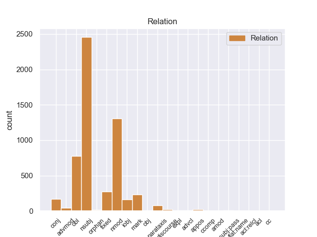
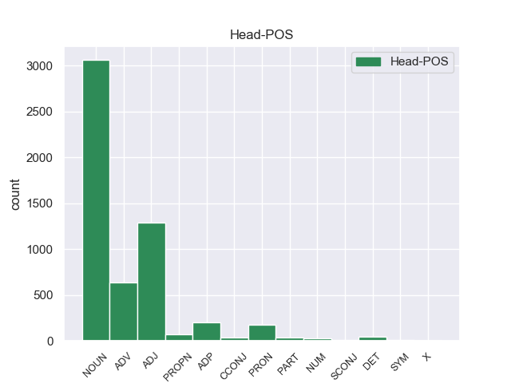

Distribution of features within this leaf



Morphosyntax Rules sorted by frequency.
- When the dependent token is the nominal subject(nsubj) of the head token, and the head token is NOUN and the dependent token is PRON, the Gender needs to be Neut.
1 Да _ _ _ _ 0 _ _ _
2 , _ _ _ _ 0 _ _ _
3 это это PRON _ Animacy=Inan|Case=Nom|Gender=Neut|Number=Sing 5 nsubj 5:nsubj _
4 была _ _ _ _ 0 _ _ _
5 работка работка NOUN _ Animacy=Inan|Case=Nom|Gender=Fem|Number=Sing 0 _ _ _
6 ! _ _ _ _ 0 _ _ _
1 Грибы _ _ _ _ 0 _ _ _
2 стояли _ _ _ _ 0 _ _ _
3 в _ _ _ _ 0 _ _ _
4 лезвистой _ _ _ _ 0 _ _ _
5 осоковатой _ _ _ _ 0 _ _ _
6 траве _ _ _ _ 0 _ _ _
7 не _ _ _ _ 0 _ _ _
8 то то PRON _ Animacy=Inan|Case=Nom|Gender=Neut|Number=Sing 10 nmod 10:nmod _
9 что _ _ _ _ 0 _ _ _
10 табунками табунок NOUN _ Animacy=Inan|Case=Ins|Gender=Masc|Number=Plur 0 _ _ _
11 , _ _ _ _ 0 _ _ _
12 они _ _ _ _ 0 _ _ _
13 сливались _ _ _ _ 0 _ _ _
14 в _ _ _ _ 0 _ _ _
15 сплошные _ _ _ _ 0 _ _ _
16 изжелта _ _ _ _ 0 _ _ _
17 - _ _ _ _ 0 _ _ _
18 бурые _ _ _ _ 0 _ _ _
19 поля _ _ _ _ 0 _ _ _
20 . _ _ _ _ 0 _ _ _
1 - _ _ _ _ 0 _ _ _
2 Слушай _ _ _ _ 0 _ _ _
3 , _ _ _ _ 0 _ _ _
4 а _ _ _ _ 0 _ _ _
5 зачем _ _ _ _ 0 _ _ _
6 тебе _ _ _ _ 0 _ _ _
7 это это PRON _ Animacy=Inan|Case=Nom|Gender=Neut|Number=Sing 8 nsubj 8:nsubj _
8 нужно нужный ADJ _ Degree=Pos|Gender=Neut|Number=Sing|Variant=Short 0 _ _ _
9 ! _ _ _ _ 0 _ _ _
10 - _ _ _ _ 0 _ _ _
11 спросил _ _ _ _ 0 _ _ _
12 я _ _ _ _ 0 _ _ _
13 . _ _ _ _ 0 _ _ _
1 Вместе вместе ADV _ Degree=Pos 0 _ _ _
2 с _ _ _ _ 0 _ _ _
3 тем то PRON _ Animacy=Inan|Case=Ins|Gender=Neut|Number=Sing 1 obl 1:obl _
4 противоборство _ _ _ _ 0 _ _ _
5 , _ _ _ _ 0 _ _ _
6 особенно _ _ _ _ 0 _ _ _
7 в _ _ _ _ 0 _ _ _
8 области _ _ _ _ 0 _ _ _
9 военно _ _ _ _ 0 _ _ _
10 - _ _ _ _ 0 _ _ _
11 стратегической _ _ _ _ 0 _ _ _
12 , _ _ _ _ 0 _ _ _
13 ясно _ _ _ _ 0 _ _ _
14 обозначило _ _ _ _ 0 _ _ _
15 и _ _ _ _ 0 _ _ _
16 допустимые _ _ _ _ 0 _ _ _
17 пределы _ _ _ _ 0 _ _ _
18 соперничества _ _ _ _ 0 _ _ _
19 , _ _ _ _ 0 _ _ _
20 перейти _ _ _ _ 0 _ _ _
21 которые _ _ _ _ 0 _ _ _
22 означало _ _ _ _ 0 _ _ _
23 бы _ _ _ _ 0 _ _ _
24 сделать _ _ _ _ 0 _ _ _
25 шаг _ _ _ _ 0 _ _ _
26 к _ _ _ _ 0 _ _ _
27 всемирной _ _ _ _ 0 _ _ _
28 катастрофе _ _ _ _ 0 _ _ _
29 . _ _ _ _ 0 _ _ _
1 Начните _ _ _ _ 0 _ _ _
2 с _ _ _ _ 0 _ _ _
3 азов _ _ _ _ 0 _ _ _
4 , _ _ _ _ 0 _ _ _
5 прочтите _ _ _ _ 0 _ _ _
6 хотя _ _ _ _ 0 _ _ _
7 бы _ _ _ _ 0 _ _ _
8 историю _ _ _ _ 0 _ _ _
9 Ключевского _ _ _ _ 0 _ _ _
10 и _ _ _ _ 0 _ _ _
11 постарайтесь _ _ _ _ 0 _ _ _
12 понять _ _ _ _ 0 _ _ _
13 , _ _ _ _ 0 _ _ _
14 если _ _ _ _ 0 _ _ _
15 вы _ _ _ _ 0 _ _ _
16 еще _ _ _ _ 0 _ _ _
17 способны способный ADJ _ Degree=Pos|Number=Plur|Variant=Short 0 _ _ _
18 на _ _ _ _ 0 _ _ _
19 это это PRON _ Animacy=Inan|Case=Acc|Gender=Neut|Number=Sing 17 obl 17:obl SpaceAfter=No
20 , _ _ _ _ 0 _ _ _
21 что _ _ _ _ 0 _ _ _
22 будущее _ _ _ _ 0 _ _ _
23 есть _ _ _ _ 0 _ _ _
24 продукт _ _ _ _ 0 _ _ _
25 прошлого _ _ _ _ 0 _ _ _
26 . _ _ _ _ 0 _ _ _
1 Но _ _ _ _ 0 _ _ _
2 еще _ _ _ _ 0 _ _ _
3 задолго _ _ _ _ 0 _ _ _
4 до до ADP _ _ 0 _ _ _
5 того то PRON _ Animacy=Inan|Case=Gen|Gender=Neut|Number=Sing 4 fixed 4:fixed _
6 , _ _ _ _ 0 _ _ _
7 как _ _ _ _ 0 _ _ _
8 я _ _ _ _ 0 _ _ _
9 осознал _ _ _ _ 0 _ _ _
10 свою _ _ _ _ 0 _ _ _
11 обреченность _ _ _ _ 0 _ _ _
12 быть _ _ _ _ 0 _ _ _
13 всегда _ _ _ _ 0 _ _ _
14 на _ _ _ _ 0 _ _ _
15 втором _ _ _ _ 0 _ _ _
16 плане _ _ _ _ 0 _ _ _
17 , _ _ _ _ 0 _ _ _
18 я _ _ _ _ 0 _ _ _
19 уже _ _ _ _ 0 _ _ _
20 не _ _ _ _ 0 _ _ _
21 мог _ _ _ _ 0 _ _ _
22 любить _ _ _ _ 0 _ _ _
23 первого _ _ _ _ 0 _ _ _
24 . _ _ _ _ 0 _ _ _
1 А _ _ _ _ 0 _ _ _
2 в _ _ _ _ 0 _ _ _
3 Иркутске _ _ _ _ 0 _ _ _
4 переломилось _ _ _ _ 0 _ _ _
5 не _ _ _ _ 0 _ _ _
6 только _ _ _ _ 0 _ _ _
7 мое _ _ _ _ 0 _ _ _
8 комнатное _ _ _ _ 0 _ _ _
9 существование _ _ _ _ 0 _ _ _
10 - _ _ _ _ 0 _ _ _
11 домашний _ _ _ _ 0 _ _ _
12 зверек _ _ _ _ 0 _ _ _
13 увидел _ _ _ _ 0 _ _ _
14 , _ _ _ _ 0 _ _ _
15 как _ _ _ _ 0 _ _ _
16 огромен _ _ _ _ 0 _ _ _
17 , _ _ _ _ 0 _ _ _
18 многообразен _ _ _ _ 0 _ _ _
19 , _ _ _ _ 0 _ _ _
20 сложен _ _ _ _ 0 _ _ _
21 мир _ _ _ _ 0 _ _ _
22 , _ _ _ _ 0 _ _ _
23 свершился _ _ _ _ 0 _ _ _
24 переход _ _ _ _ 0 _ _ _
25 от _ _ _ _ 0 _ _ _
26 младенческой _ _ _ _ 0 _ _ _
27 всеядности _ _ _ _ 0 _ _ _
28 к _ _ _ _ 0 _ _ _
29 отбору _ _ _ _ 0 _ _ _
30 , _ _ _ _ 0 _ _ _
31 то то PRON _ Animacy=Inan|Case=Nom|Gender=Neut|Number=Sing 34 mark 34:mark _
32 есть _ _ _ _ 0 _ _ _
33 к _ _ _ _ 0 _ _ _
34 характеру характер NOUN _ Animacy=Inan|Case=Dat|Gender=Masc|Number=Sing 0 _ _ _
35 . _ _ _ _ 0 _ _ _
1 Я _ _ _ _ 0 _ _ _
2 знаю _ _ _ _ 0 _ _ _
3 , _ _ _ _ 0 _ _ _
4 что _ _ _ _ 0 _ _ _
5 это это PRON _ Animacy=Inan|Case=Nom|Gender=Neut|Number=Sing 7 nsubj 7:nsubj _
6 не _ _ _ _ 0 _ _ _
7 так так ADV _ Degree=Pos 0 _ _ _
8 , _ _ _ _ 0 _ _ _
9 верблюды _ _ _ _ 0 _ _ _
10 были _ _ _ _ 0 _ _ _
11 позже _ _ _ _ 0 _ _ _
12 , _ _ _ _ 0 _ _ _
13 в _ _ _ _ 0 _ _ _
14 Саратове _ _ _ _ 0 _ _ _
15 , _ _ _ _ 0 _ _ _
16 но _ _ _ _ 0 _ _ _
17 мне _ _ _ _ 0 _ _ _
18 хочется _ _ _ _ 0 _ _ _
19 подарить _ _ _ _ 0 _ _ _
20 верблюдов _ _ _ _ 0 _ _ _
21 Иркутску _ _ _ _ 0 _ _ _
22 . _ _ _ _ 0 _ _ _
1 И _ _ _ _ 0 _ _ _
2 здесь _ _ _ _ 0 _ _ _
3 незримый _ _ _ _ 0 _ _ _
4 стеклянный _ _ _ _ 0 _ _ _
5 купол _ _ _ _ 0 _ _ _
6 отделял _ _ _ _ 0 _ _ _
7 их _ _ _ _ 0 _ _ _
8 от _ _ _ _ 0 _ _ _
9 зрителей зритель NOUN _ Animacy=Anim|Case=Gen|Gender=Masc|Number=Plur 0 _ _ _
10 , _ _ _ _ 0 _ _ _
11 от _ _ _ _ 0 _ _ _
12 всего все PRON _ Animacy=Inan|Case=Gen|Gender=Neut|Number=Sing 9 conj 9:conj SpaceAfter=No
13 , _ _ _ _ 0 _ _ _
14 что _ _ _ _ 0 _ _ _
15 не _ _ _ _ 0 _ _ _
16 было _ _ _ _ 0 _ _ _
17 их _ _ _ _ 0 _ _ _
18 миром _ _ _ _ 0 _ _ _
19 . _ _ _ _ 0 _ _ _
1 - _ _ _ _ 0 _ _ _
2 Мама _ _ _ _ 0 _ _ _
3 , _ _ _ _ 0 _ _ _
4 кто кто PRON _ Case=Nom 0 _ _ _
5 это это PRON _ Animacy=Inan|Case=Nom|Gender=Neut|Number=Sing 4 nsubj 4:nsubj SpaceAfter=No
6 ! _ _ _ _ 0 _ _ _
7 - _ _ _ _ 0 _ _ _
8 пробормотал _ _ _ _ 0 _ _ _
9 я _ _ _ _ 0 _ _ _
10 сонным _ _ _ _ 0 _ _ _
11 голосом _ _ _ _ 0 _ _ _
12 . _ _ _ _ 0 _ _ _
1 Есть _ _ _ _ 0 _ _ _
2 оно оно PRON _ Case=Nom|Gender=Neut|Number=Sing|Person=3 7 nsubj 7:nsubj SpaceAfter=No
3 , _ _ _ _ 0 _ _ _
4 например _ _ _ _ 0 _ _ _
5 , _ _ _ _ 0 _ _ _
6 в _ _ _ _ 0 _ _ _
7 Канаде Канада PROPN _ Animacy=Inan|Case=Loc|Gender=Fem|Number=Sing 0 _ _ _
8 , _ _ _ _ 0 _ _ _
9 Швейцарии _ _ _ _ 0 _ _ _
10 , _ _ _ _ 0 _ _ _
11 Индии _ _ _ _ 0 _ _ _
12 , _ _ _ _ 0 _ _ _
13 Австрии _ _ _ _ 0 _ _ _
14 , _ _ _ _ 0 _ _ _
15 Люксембурге _ _ _ _ 0 _ _ _
16 . _ _ _ _ 0 _ _ _
1 Случалось _ _ _ _ 0 _ _ _
2 , _ _ _ _ 0 _ _ _
3 он _ _ _ _ 0 _ _ _
4 оповещал _ _ _ _ 0 _ _ _
5 о _ _ _ _ 0 _ _ _
6 себе _ _ _ _ 0 _ _ _
7 лишь _ _ _ _ 0 _ _ _
8 бугорком _ _ _ _ 0 _ _ _
9 , _ _ _ _ 0 _ _ _
10 малым _ _ _ _ 0 _ _ _
11 вздутием _ _ _ _ 0 _ _ _
12 под _ _ _ _ 0 _ _ _
13 мертвыми _ _ _ _ 0 _ _ _
14 , _ _ _ _ 0 _ _ _
15 палыми _ _ _ _ 0 _ _ _
16 иглами _ _ _ _ 0 _ _ _
17 , _ _ _ _ 0 _ _ _
18 и _ _ _ _ 0 _ _ _
19 приходилось _ _ _ _ 0 _ _ _
20 осторожно _ _ _ _ 0 _ _ _
21 разгребать _ _ _ _ 0 _ _ _
22 их _ _ _ _ 0 _ _ _
23 , _ _ _ _ 0 _ _ _
24 чтобы _ _ _ _ 0 _ _ _
25 докопаться _ _ _ _ 0 _ _ _
26 до _ _ _ _ 0 _ _ _
27 гриба _ _ _ _ 0 _ _ _
28 , _ _ _ _ 0 _ _ _
29 а а CCONJ _ _ 0 _ _ _
30 то то PRON _ Animacy=Inan|Case=Nom|Gender=Neut|Number=Sing 29 fixed 29:fixed _
31 и _ _ _ _ 0 _ _ _
32 до _ _ _ _ 0 _ _ _
33 целой _ _ _ _ 0 _ _ _
34 грибной _ _ _ _ 0 _ _ _
35 семейки _ _ _ _ 0 _ _ _
36 . _ _ _ _ 0 _ _ _
1 По _ _ _ _ 0 _ _ _
2 главной _ _ _ _ 0 _ _ _
3 улице _ _ _ _ 0 _ _ _
4 города _ _ _ _ 0 _ _ _
5 , _ _ _ _ 0 _ _ _
6 куда _ _ _ _ 0 _ _ _
7 выходила _ _ _ _ 0 _ _ _
8 наша _ _ _ _ 0 _ _ _
9 Малая _ _ _ _ 0 _ _ _
10 Блиновская _ _ _ _ 0 _ _ _
11 , _ _ _ _ 0 _ _ _
12 гуляли _ _ _ _ 0 _ _ _
13 среди _ _ _ _ 0 _ _ _
14 городской _ _ _ _ 0 _ _ _
15 толпы _ _ _ _ 0 _ _ _
16 высокие _ _ _ _ 0 _ _ _
17 , _ _ _ _ 0 _ _ _
18 стройные _ _ _ _ 0 _ _ _
19 , _ _ _ _ 0 _ _ _
20 светловолосые _ _ _ _ 0 _ _ _
21 мужчины _ _ _ _ 0 _ _ _
22 и _ _ _ _ 0 _ _ _
23 под _ _ _ _ 0 _ _ _
24 стать _ _ _ _ 0 _ _ _
25 им _ _ _ _ 0 _ _ _
26 высокие _ _ _ _ 0 _ _ _
27 , _ _ _ _ 0 _ _ _
28 гибкие _ _ _ _ 0 _ _ _
29 женщины женщина NOUN _ Animacy=Anim|Case=Nom|Gender=Fem|Number=Plur 0 _ _ _
30 , _ _ _ _ 0 _ _ _
31 - _ _ _ _ 0 _ _ _
32 все все PRON _ Animacy=Inan|Case=Nom|Gender=Neut|Number=Sing 29 parataxis 29:parataxis _
33 в _ _ _ _ 0 _ _ _
34 легкой _ _ _ _ 0 _ _ _
35 серой _ _ _ _ 0 _ _ _
36 или _ _ _ _ 0 _ _ _
37 кремовой _ _ _ _ 0 _ _ _
38 фланели _ _ _ _ 0 _ _ _
39 , _ _ _ _ 0 _ _ _
40 в _ _ _ _ 0 _ _ _
41 красивых _ _ _ _ 0 _ _ _
42 мягких _ _ _ _ 0 _ _ _
43 туфлях _ _ _ _ 0 _ _ _
44 на _ _ _ _ 0 _ _ _
45 толстой _ _ _ _ 0 _ _ _
46 каучуковой _ _ _ _ 0 _ _ _
47 подошве _ _ _ _ 0 _ _ _
48 . _ _ _ _ 0 _ _ _
1 Не _ _ _ _ 0 _ _ _
2 только _ _ _ _ 0 _ _ _
3 то то PRON _ Animacy=Inan|Case=Nom|Gender=Neut|Number=Sing 0 _ _ _
4 , _ _ _ _ 0 _ _ _
5 что _ _ _ _ 0 _ _ _
6 летает _ _ _ _ 0 _ _ _
7 , _ _ _ _ 0 _ _ _
8 но _ _ _ _ 0 _ _ _
9 и _ _ _ _ 0 _ _ _
10 все все PRON _ Animacy=Inan|Case=Nom|Gender=Neut|Number=Sing 3 conj 3:conj SpaceAfter=No
11 , _ _ _ _ 0 _ _ _
12 что _ _ _ _ 0 _ _ _
13 движется _ _ _ _ 0 _ _ _
14 , _ _ _ _ 0 _ _ _
15 должно _ _ _ _ 0 _ _ _
16 быть _ _ _ _ 0 _ _ _
17 легким _ _ _ _ 0 _ _ _
18 , _ _ _ _ 0 _ _ _
19 нержавеющим _ _ _ _ 0 _ _ _
20 , _ _ _ _ 0 _ _ _
21 экономичным _ _ _ _ 0 _ _ _
22 и _ _ _ _ 0 _ _ _
23 обходиться _ _ _ _ 0 _ _ _
24 без _ _ _ _ 0 _ _ _
25 ремонта _ _ _ _ 0 _ _ _
26 тысячи _ _ _ _ 0 _ _ _
27 и _ _ _ _ 0 _ _ _
28 десятки _ _ _ _ 0 _ _ _
29 тысяч _ _ _ _ 0 _ _ _
30 часов _ _ _ _ 0 _ _ _
31 . _ _ _ _ 0 _ _ _
1 Кроме _ _ _ _ 0 _ _ _
2 того то PRON _ Animacy=Inan|Case=Gen|Gender=Neut|Number=Sing 6 parataxis 6:parataxis SpaceAfter=No
3 , _ _ _ _ 0 _ _ _
4 такой _ _ _ _ 0 _ _ _
5 адсорбент _ _ _ _ 0 _ _ _
6 должен должен ADJ _ Degree=Pos|Gender=Masc|Number=Sing|Variant=Short 0 _ _ _
7 быть _ _ _ _ 0 _ _ _
8 дешевым _ _ _ _ 0 _ _ _
9 , _ _ _ _ 0 _ _ _
10 он _ _ _ _ 0 _ _ _
11 должен _ _ _ _ 0 _ _ _
12 сопротивляться _ _ _ _ 0 _ _ _
13 действию _ _ _ _ 0 _ _ _
14 соленой _ _ _ _ 0 _ _ _
15 воды _ _ _ _ 0 _ _ _
16 , _ _ _ _ 0 _ _ _
17 биологических _ _ _ _ 0 _ _ _
18 обрастаний _ _ _ _ 0 _ _ _
19 , _ _ _ _ 0 _ _ _
20 должен _ _ _ _ 0 _ _ _
21 хорошо _ _ _ _ 0 _ _ _
22 выдерживать _ _ _ _ 0 _ _ _
23 химическую _ _ _ _ 0 _ _ _
24 обработку _ _ _ _ 0 _ _ _
25 , _ _ _ _ 0 _ _ _
26 чтобы _ _ _ _ 0 _ _ _
27 после _ _ _ _ 0 _ _ _
28 извлечения _ _ _ _ 0 _ _ _
29 накопленного _ _ _ _ 0 _ _ _
30 металла _ _ _ _ 0 _ _ _
31 его _ _ _ _ 0 _ _ _
32 можно _ _ _ _ 0 _ _ _
33 было _ _ _ _ 0 _ _ _
34 бы _ _ _ _ 0 _ _ _
35 снова _ _ _ _ 0 _ _ _
36 вернуть _ _ _ _ 0 _ _ _
37 в _ _ _ _ 0 _ _ _
38 море _ _ _ _ 0 _ _ _
39 . _ _ _ _ 0 _ _ _
1 То то PRON _ Animacy=Inan|Case=Nom|Gender=Neut|Number=Sing 8 mark 8:mark _
2 есть _ _ _ _ 0 _ _ _
3 , _ _ _ _ 0 _ _ _
4 при _ _ _ _ 0 _ _ _
5 распаде _ _ _ _ 0 _ _ _
6 подобных _ _ _ _ 0 _ _ _
7 молекул _ _ _ _ 0 _ _ _
8 можно можно ADV _ Degree=Pos 0 _ _ _
9 получить _ _ _ _ 0 _ _ _
10 пленку _ _ _ _ 0 _ _ _
11 , _ _ _ _ 0 _ _ _
12 состоящую _ _ _ _ 0 _ _ _
13 из _ _ _ _ 0 _ _ _
14 последовательно _ _ _ _ 0 _ _ _
15 чередующихся _ _ _ _ 0 _ _ _
16 слоев _ _ _ _ 0 _ _ _
17 различных _ _ _ _ 0 _ _ _
18 металлов _ _ _ _ 0 _ _ _
19 , _ _ _ _ 0 _ _ _
20 обладающую _ _ _ _ 0 _ _ _
21 очень _ _ _ _ 0 _ _ _
22 интересными _ _ _ _ 0 _ _ _
23 свойствами _ _ _ _ 0 _ _ _
24 . _ _ _ _ 0 _ _ _
1 Чем _ _ _ _ 0 _ _ _
2 тоньше _ _ _ _ 0 _ _ _
3 жидкая _ _ _ _ 0 _ _ _
4 мембрана _ _ _ _ 0 _ _ _
5 , _ _ _ _ 0 _ _ _
6 обширнее _ _ _ _ 0 _ _ _
7 ее _ _ _ _ 0 _ _ _
8 поверхность _ _ _ _ 0 _ _ _
9 , _ _ _ _ 0 _ _ _
10 то то PRON _ Animacy=Inan|Case=Nom|Gender=Neut|Number=Sing 16 mark 16:mark _
11 есть _ _ _ _ 0 _ _ _
12 , _ _ _ _ 0 _ _ _
13 чем _ _ _ _ 0 _ _ _
14 больше _ _ _ _ 0 _ _ _
15 она _ _ _ _ 0 _ _ _
16 похожа похожий ADJ _ Degree=Pos|Gender=Fem|Number=Sing|Variant=Short 0 _ _ _
17 на _ _ _ _ 0 _ _ _
18 биологическую _ _ _ _ 0 _ _ _
19 , _ _ _ _ 0 _ _ _
20 тем _ _ _ _ 0 _ _ _
21 эффективнее _ _ _ _ 0 _ _ _
22 , _ _ _ _ 0 _ _ _
23 быстрее _ _ _ _ 0 _ _ _
24 идет _ _ _ _ 0 _ _ _
25 процесс _ _ _ _ 0 _ _ _
26 переноса _ _ _ _ 0 _ _ _
27 извлекающего _ _ _ _ 0 _ _ _
28 вещества _ _ _ _ 0 _ _ _
29 . _ _ _ _ 0 _ _ _
1 Гарусов _ _ _ _ 0 _ _ _
2 так _ _ _ _ 0 _ _ _
3 это _ _ _ _ 0 _ _ _
4 себе _ _ _ _ 0 _ _ _
5 и _ _ _ _ 0 _ _ _
6 представлял _ _ _ _ 0 _ _ _
7 : _ _ _ _ 0 _ _ _
8 сидят _ _ _ _ 0 _ _ _
9 рядышком _ _ _ _ 0 _ _ _
10 два _ _ _ _ 0 _ _ _
11 красивых _ _ _ _ 0 _ _ _
12 дворника _ _ _ _ 0 _ _ _
13 в _ _ _ _ 0 _ _ _
14 больших _ _ _ _ 0 _ _ _
15 тулупах _ _ _ _ 0 _ _ _
16 , _ _ _ _ 0 _ _ _
17 а _ _ _ _ 0 _ _ _
18 судьба _ _ _ _ 0 _ _ _
19 к _ _ _ _ 0 _ _ _
20 ним _ _ _ _ 0 _ _ _
21 , _ _ _ _ 0 _ _ _
22 вроде _ _ _ _ 0 _ _ _
23 голубя _ _ _ _ 0 _ _ _
24 , _ _ _ _ 0 _ _ _
25 не _ _ _ _ 0 _ _ _
26 то _ _ _ _ 0 _ _ _
27 входит _ _ _ _ 0 _ _ _
28 , _ _ _ _ 0 _ _ _
29 не не PART _ Polarity=Neg 0 _ _ _
30 то то PRON _ Animacy=Inan|Case=Nom|Gender=Neut|Number=Sing 29 fixed 29:fixed _
31 прилетает _ _ _ _ 0 _ _ _
32 . _ _ _ _ 0 _ _ _
1 " _ _ _ _ 0 _ _ _
2 Да _ _ _ _ 0 _ _ _
3 , _ _ _ _ 0 _ _ _
4 - _ _ _ _ 0 _ _ _
5 усмехнулся _ _ _ _ 0 _ _ _
6 Монахов _ _ _ _ 0 _ _ _
7 , _ _ _ _ 0 _ _ _
8 - _ _ _ _ 0 _ _ _
9 жена _ _ _ _ 0 _ _ _
10 - _ _ _ _ 0 _ _ _
11 это _ _ _ _ 0 _ _ _
12 не _ _ _ _ 0 _ _ _
13 прошлое _ _ _ _ 0 _ _ _
14 , _ _ _ _ 0 _ _ _
15 жена _ _ _ _ 0 _ _ _
16 - _ _ _ _ 0 _ _ _
17 это _ _ _ _ 0 _ _ _
18 самое самый ADJ _ Case=Nom|Degree=Pos|Gender=Neut|Number=Sing 0 _ _ _
19 что что PRON _ Animacy=Inan|Case=Nom|Gender=Neut|Number=Sing 18 advmod 18:advmod _
20 ни _ _ _ _ 0 _ _ _
21 на _ _ _ _ 0 _ _ _
22 есть _ _ _ _ 0 _ _ _
23 настоящее _ _ _ _ 0 _ _ _
24 … _ _ _ _ 0 _ _ _
25 " _ _ _ _ 0 _ _ _
1 Острые _ _ _ _ 0 _ _ _
2 , _ _ _ _ 0 _ _ _
3 полные _ _ _ _ 0 _ _ _
4 искренней _ _ _ _ 0 _ _ _
5 боли _ _ _ _ 0 _ _ _
6 и _ _ _ _ 0 _ _ _
7 глубокого _ _ _ _ 0 _ _ _
8 беспокойства _ _ _ _ 0 _ _ _
9 письма _ _ _ _ 0 _ _ _
10 читателей _ _ _ _ 0 _ _ _
11 " _ _ _ _ 0 _ _ _
12 Известий _ _ _ _ 0 _ _ _
13 " _ _ _ _ 0 _ _ _
14 - _ _ _ _ 0 _ _ _
15 еще _ _ _ _ 0 _ _ _
16 одно _ _ _ _ 0 _ _ _
17 тому то PRON _ Animacy=Inan|Case=Dat|Gender=Neut|Number=Sing 18 iobj 18:iobj _
18 подтверждение подтверждение NOUN _ Animacy=Inan|Case=Nom|Gender=Neut|Number=Sing 0 _ _ _
19 . _ _ _ _ 0 _ _ _
1 - _ _ _ _ 0 _ _ _
2 " _ _ _ _ 0 _ _ _
3 Чего _ _ _ _ 0 _ _ _
4 его _ _ _ _ 0 _ _ _
5 жалеть _ _ _ _ 0 _ _ _
6 , _ _ _ _ 0 _ _ _
7 все все PRON _ Animacy=Inan|Case=Nom|Gender=Neut|Number=Sing 9 advmod 9:advmod _
8 равно _ _ _ _ 0 _ _ _
9 безотцовщина безотцовщина NOUN _ Animacy=Inan|Case=Nom|Gender=Fem|Number=Sing 0 _ _ _
10 , _ _ _ _ 0 _ _ _
11 - _ _ _ _ 0 _ _ _
12 отвечала _ _ _ _ 0 _ _ _
13 мать _ _ _ _ 0 _ _ _
14 , _ _ _ _ 0 _ _ _
15 - _ _ _ _ 0 _ _ _
16 а _ _ _ _ 0 _ _ _
17 ты _ _ _ _ 0 _ _ _
18 меня _ _ _ _ 0 _ _ _
19 не _ _ _ _ 0 _ _ _
20 попрекай _ _ _ _ 0 _ _ _
21 , _ _ _ _ 0 _ _ _
22 не _ _ _ _ 0 _ _ _
23 на _ _ _ _ 0 _ _ _
24 свои _ _ _ _ 0 _ _ _
25 пью _ _ _ _ 0 _ _ _
26 , _ _ _ _ 0 _ _ _
27 на _ _ _ _ 0 _ _ _
28 чужие _ _ _ _ 0 _ _ _
29 " _ _ _ _ 0 _ _ _
30 . _ _ _ _ 0 _ _ _
1 Это это PRON _ Animacy=Inan|Case=Nom|Gender=Neut|Number=Sing 2 nsubj 2:nsubj _
2 один один NUM _ Case=Nom|Gender=Masc 0 _ _ _
3 из _ _ _ _ 0 _ _ _
4 наиболее _ _ _ _ 0 _ _ _
5 острых _ _ _ _ 0 _ _ _
6 вопросов _ _ _ _ 0 _ _ _
7 , _ _ _ _ 0 _ _ _
8 поставленных _ _ _ _ 0 _ _ _
9 перед _ _ _ _ 0 _ _ _
10 партией _ _ _ _ 0 _ _ _
11 ходом _ _ _ _ 0 _ _ _
12 перестройки _ _ _ _ 0 _ _ _
13 . _ _ _ _ 0 _ _ _
1 Крупные _ _ _ _ 0 _ _ _
2 промышленные _ _ _ _ 0 _ _ _
3 аварии _ _ _ _ 0 _ _ _
4 дополнили _ _ _ _ 0 _ _ _
5 и _ _ _ _ 0 _ _ _
6 без _ _ _ _ 0 _ _ _
7 того то PRON _ Animacy=Inan|Case=Gen|Gender=Neut|Number=Sing 8 nmod 8:nmod _
8 мрачную мрачный ADJ _ Case=Acc|Degree=Pos|Gender=Fem|Number=Sing 0 _ _ _
9 картину _ _ _ _ 0 _ _ _
10 . _ _ _ _ 0 _ _ _
1 Нечто _ _ _ _ 0 _ _ _
2 подобное _ _ _ _ 0 _ _ _
3 ученые _ _ _ _ 0 _ _ _
4 , _ _ _ _ 0 _ _ _
5 конечно _ _ _ _ 0 _ _ _
6 , _ _ _ _ 0 _ _ _
7 уже _ _ _ _ 0 _ _ _
8 подозревали _ _ _ _ 0 _ _ _
9 , _ _ _ _ 0 _ _ _
10 да _ _ _ _ 0 _ _ _
11 и _ _ _ _ 0 _ _ _
12 лингвистов _ _ _ _ 0 _ _ _
13 таким _ _ _ _ 0 _ _ _
14 открытием _ _ _ _ 0 _ _ _
15 не _ _ _ _ 0 _ _ _
16 удивить _ _ _ _ 0 _ _ _
17 , _ _ _ _ 0 _ _ _
18 но _ _ _ _ 0 _ _ _
19 факт _ _ _ _ 0 _ _ _
20 тем то PRON _ Animacy=Inan|Case=Ins|Gender=Neut|Number=Sing 23 discourse 23:discourse _
21 не _ _ _ _ 0 _ _ _
22 менее _ _ _ _ 0 _ _ _
23 любопытный любопытный ADJ _ Case=Nom|Degree=Pos|Gender=Masc|Number=Sing 0 _ _ _
24 . _ _ _ _ 0 _ _ _
1 То то PRON _ Animacy=Inan|Case=Nom|Gender=Neut|Number=Sing 3 mark 3:mark _
2 есть _ _ _ _ 0 _ _ _
3 этим этот DET _ Case=Ins|Gender=Neut|Number=Sing 0 _ _ _
4 " _ _ _ _ 0 _ _ _
5 мы _ _ _ _ 0 _ _ _
6 " _ _ _ _ 0 _ _ _
7 он _ _ _ _ 0 _ _ _
8 причисляет _ _ _ _ 0 _ _ _
9 себя _ _ _ _ 0 _ _ _
10 к _ _ _ _ 0 _ _ _
11 когорте _ _ _ _ 0 _ _ _
12 людей _ _ _ _ 0 _ _ _
13 - _ _ _ _ 0 _ _ _
14 силовиков _ _ _ _ 0 _ _ _
15 , _ _ _ _ 0 _ _ _
16 которые _ _ _ _ 0 _ _ _
17 и _ _ _ _ 0 _ _ _
18 бегают _ _ _ _ 0 _ _ _
19 сейчас _ _ _ _ 0 _ _ _
20 по _ _ _ _ 0 _ _ _
21 НКО _ _ _ _ 0 _ _ _
22 . _ _ _ _ 0 _ _ _
1 При _ _ _ _ 0 _ _ _
2 этом _ _ _ _ 0 _ _ _
3 традиционное _ _ _ _ 0 _ _ _
4 чинопочитание _ _ _ _ 0 _ _ _
5 немцев _ _ _ _ 0 _ _ _
6 , _ _ _ _ 0 _ _ _
7 любовь _ _ _ _ 0 _ _ _
8 к _ _ _ _ 0 _ _ _
9 выпивке _ _ _ _ 0 _ _ _
10 финнов _ _ _ _ 0 _ _ _
11 , _ _ _ _ 0 _ _ _
12 сложное _ _ _ _ 0 _ _ _
13 отношение _ _ _ _ 0 _ _ _
14 к _ _ _ _ 0 _ _ _
15 евреям _ _ _ _ 0 _ _ _
16 у _ _ _ _ 0 _ _ _
17 поляков _ _ _ _ 0 _ _ _
18 и _ _ _ _ 0 _ _ _
19 тому то PRON _ Animacy=Inan|Case=Dat|Gender=Neut|Number=Sing 20 iobj 20:iobj _
20 подобные подобный ADJ _ Case=Nom|Degree=Pos|Number=Plur 0 _ _ _
21 явления _ _ _ _ 0 _ _ _
22 не _ _ _ _ 0 _ _ _
23 анализируются _ _ _ _ 0 _ _ _
24 . _ _ _ _ 0 _ _ _
1 Кроме _ _ _ _ 0 _ _ _
2 того то PRON _ Animacy=Inan|Case=Gen|Gender=Neut|Number=Sing 8 parataxis 8:parataxis SpaceAfter=No
3 , _ _ _ _ 0 _ _ _
4 путем _ _ _ _ 0 _ _ _
5 комбинаторики _ _ _ _ 0 _ _ _
6 элементов _ _ _ _ 0 _ _ _
7 гламура _ _ _ _ 0 _ _ _
8 можно можно ADV _ Degree=Pos 0 _ _ _
9 создавать _ _ _ _ 0 _ _ _
10 все _ _ _ _ 0 _ _ _
11 новые _ _ _ _ 0 _ _ _
12 и _ _ _ _ 0 _ _ _
13 новые _ _ _ _ 0 _ _ _
14 рынки _ _ _ _ 0 _ _ _
15 и _ _ _ _ 0 _ _ _
16 индустрии _ _ _ _ 0 _ _ _
17 еще _ _ _ _ 0 _ _ _
18 чего-нибудь _ _ _ _ 0 _ _ _
19 для _ _ _ _ 0 _ _ _
20 живущих _ _ _ _ 0 _ _ _
21 в _ _ _ _ 0 _ _ _
22 мире _ _ _ _ 0 _ _ _
23 гламура _ _ _ _ 0 _ _ _
24 . _ _ _ _ 0 _ _ _
1 Ценовой _ _ _ _ 0 _ _ _
2 разрыв _ _ _ _ 0 _ _ _
3 лишь _ _ _ _ 0 _ _ _
4 отчасти _ _ _ _ 0 _ _ _
5 можно можно ADV _ Degree=Pos 0 _ _ _
6 объяснить _ _ _ _ 0 _ _ _
7 разницей _ _ _ _ 0 _ _ _
8 в _ _ _ _ 0 _ _ _
9 качестве _ _ _ _ 0 _ _ _
10 продуктов _ _ _ _ 0 _ _ _
11 и _ _ _ _ 0 _ _ _
12 услуг _ _ _ _ 0 _ _ _
13 , _ _ _ _ 0 _ _ _
14 главное _ _ _ _ 0 _ _ _
15 объяснение _ _ _ _ 0 _ _ _
16 в _ _ _ _ 0 _ _ _
17 том то PRON _ Animacy=Inan|Case=Loc|Gender=Neut|Number=Sing 5 conj 5:conj SpaceAfter=No
18 , _ _ _ _ 0 _ _ _
19 что _ _ _ _ 0 _ _ _
20 запрашиваемая _ _ _ _ 0 _ _ _
21 партизанами _ _ _ _ 0 _ _ _
22 цена _ _ _ _ 0 _ _ _
23 не _ _ _ _ 0 _ _ _
24 включает _ _ _ _ 0 _ _ _
25 виртуальную _ _ _ _ 0 _ _ _
26 ( _ _ _ _ 0 _ _ _
27 брендовую _ _ _ _ 0 _ _ _
28 ) _ _ _ _ 0 _ _ _
29 и _ _ _ _ 0 _ _ _
30 гламурную _ _ _ _ 0 _ _ _
31 ( _ _ _ _ 0 _ _ _
32 трендовую _ _ _ _ 0 _ _ _
33 ) _ _ _ _ 0 _ _ _
34 составляющие _ _ _ _ 0 _ _ _
35 . _ _ _ _ 0 _ _ _
1 Вот _ _ _ _ 0 _ _ _
2 почему _ _ _ _ 0 _ _ _
3 , _ _ _ _ 0 _ _ _
4 если _ _ _ _ 0 _ _ _
5 в _ _ _ _ 0 _ _ _
6 сернокислом _ _ _ _ 0 _ _ _
7 растворе _ _ _ _ 0 _ _ _
8 содержится _ _ _ _ 0 _ _ _
9 много _ _ _ _ 0 _ _ _
10 разных _ _ _ _ 0 _ _ _
11 ионов _ _ _ _ 0 _ _ _
12 , _ _ _ _ 0 _ _ _
13 скажем _ _ _ _ 0 _ _ _
14 молибдена _ _ _ _ 0 _ _ _
15 , _ _ _ _ 0 _ _ _
16 никеля _ _ _ _ 0 _ _ _
17 , _ _ _ _ 0 _ _ _
18 меди _ _ _ _ 0 _ _ _
19 , _ _ _ _ 0 _ _ _
20 калия _ _ _ _ 0 _ _ _
21 , _ _ _ _ 0 _ _ _
22 рения _ _ _ _ 0 _ _ _
23 , _ _ _ _ 0 _ _ _
24 а _ _ _ _ 0 _ _ _
25 извлечь _ _ _ _ 0 _ _ _
26 нужно _ _ _ _ 0 _ _ _
27 рений _ _ _ _ 0 _ _ _
28 , _ _ _ _ 0 _ _ _
29 которого который PRON _ Case=Gen 0 _ _ _
30 меньше _ _ _ _ 0 _ _ _
31 всего все PRON _ Animacy=Inan|Case=Gen|Gender=Neut|Number=Sing 29 nmod 29:nmod SpaceAfter=No
32 , _ _ _ _ 0 _ _ _
33 то _ _ _ _ 0 _ _ _
34 эффективно _ _ _ _ 0 _ _ _
35 справиться _ _ _ _ 0 _ _ _
36 с _ _ _ _ 0 _ _ _
37 этим _ _ _ _ 0 _ _ _
38 могут _ _ _ _ 0 _ _ _
39 жидкие _ _ _ _ 0 _ _ _
40 мембраны _ _ _ _ 0 _ _ _
41 , _ _ _ _ 0 _ _ _
42 которые _ _ _ _ 0 _ _ _
43 легко _ _ _ _ 0 _ _ _
44 создавать _ _ _ _ 0 _ _ _
45 , _ _ _ _ 0 _ _ _
46 вводя _ _ _ _ 0 _ _ _
47 различные _ _ _ _ 0 _ _ _
48 избирательные _ _ _ _ 0 _ _ _
49 реагенты _ _ _ _ 0 _ _ _
50 . _ _ _ _ 0 _ _ _
1 Но _ _ _ _ 0 _ _ _
2 как как SCONJ _ _ 0 _ _ _
3 бы _ _ _ _ 0 _ _ _
4 то то PRON _ Animacy=Inan|Case=Acc|Gender=Neut|Number=Sing 2 fixed 2:fixed _
5 ни _ _ _ _ 0 _ _ _
6 было _ _ _ _ 0 _ _ _
7 , _ _ _ _ 0 _ _ _
8 политизация _ _ _ _ 0 _ _ _
9 общества _ _ _ _ 0 _ _ _
10 идет _ _ _ _ 0 _ _ _
11 , _ _ _ _ 0 _ _ _
12 видение _ _ _ _ 0 _ _ _
13 наших _ _ _ _ 0 _ _ _
14 проблем _ _ _ _ 0 _ _ _
15 приобретает _ _ _ _ 0 _ _ _
16 реальный _ _ _ _ 0 _ _ _
17 альтернативный _ _ _ _ 0 _ _ _
18 характер _ _ _ _ 0 _ _ _
19 . _ _ _ _ 0 _ _ _
1 В _ _ _ _ 0 _ _ _
2 них _ _ _ _ 0 _ _ _
3 предусмотрено _ _ _ _ 0 _ _ _
4 обеспечение _ _ _ _ 0 _ _ _
5 прав _ _ _ _ 0 _ _ _
6 личности _ _ _ _ 0 _ _ _
7 без _ _ _ _ 0 _ _ _
8 какого какой DET _ Case=Gen|Gender=Neut|Number=Sing 0 _ _ _
9 бы _ _ _ _ 0 _ _ _
10 то то PRON _ Animacy=Inan|Case=Nom|Gender=Neut|Number=Sing 8 fixed 8:fixed _
11 ни _ _ _ _ 0 _ _ _
12 было _ _ _ _ 0 _ _ _
13 различия _ _ _ _ 0 _ _ _
14 в _ _ _ _ 0 _ _ _
15 отношении _ _ _ _ 0 _ _ _
16 языка _ _ _ _ 0 _ _ _
17 . _ _ _ _ 0 _ _ _
1 Т. то PRON _ Animacy=Inan|Case=Nom|Gender=Neut|Number=Sing 3 mark 3:mark _
2 е. _ _ _ _ 0 _ _ _
3 мы мы PRON _ Case=Nom|Number=Plur|Person=1 0 _ _ _
4 снова _ _ _ _ 0 _ _ _
5 имеем _ _ _ _ 0 _ _ _
6 дело _ _ _ _ 0 _ _ _
7 с _ _ _ _ 0 _ _ _
8 тем _ _ _ _ 0 _ _ _
9 или _ _ _ _ 0 _ _ _
10 иным _ _ _ _ 0 _ _ _
11 вариантом _ _ _ _ 0 _ _ _
12 идеократической _ _ _ _ 0 _ _ _
13 легитимации _ _ _ _ 0 _ _ _
14 . _ _ _ _ 0 _ _ _
1 В _ _ _ _ 0 _ _ _
2 моей _ _ _ _ 0 _ _ _
3 жизни _ _ _ _ 0 _ _ _
4 это это PRON _ Animacy=Inan|Case=Nom|Gender=Neut|Number=Sing 6 nsubj 6:nsubj _
5 было _ _ _ _ 0 _ _ _
6 одним один DET _ Case=Ins|Degree=Pos|Gender=Neut|Number=Sing 0 _ _ _
7 из _ _ _ _ 0 _ _ _
8 самых _ _ _ _ 0 _ _ _
9 важных _ _ _ _ 0 _ _ _
10 событий _ _ _ _ 0 _ _ _
11 , _ _ _ _ 0 _ _ _
12 куда _ _ _ _ 0 _ _ _
13 важнее _ _ _ _ 0 _ _ _
14 первой _ _ _ _ 0 _ _ _
15 близости _ _ _ _ 0 _ _ _
16 с _ _ _ _ 0 _ _ _
17 женщиной _ _ _ _ 0 _ _ _
18 , _ _ _ _ 0 _ _ _
19 первого _ _ _ _ 0 _ _ _
20 выстрела _ _ _ _ 0 _ _ _
21 , _ _ _ _ 0 _ _ _
22 направленного _ _ _ _ 0 _ _ _
23 в _ _ _ _ 0 _ _ _
24 меня _ _ _ _ 0 _ _ _
25 , _ _ _ _ 0 _ _ _
26 важнее _ _ _ _ 0 _ _ _
27 всех _ _ _ _ 0 _ _ _
28 книжных _ _ _ _ 0 _ _ _
29 открытий _ _ _ _ 0 _ _ _
30 . _ _ _ _ 0 _ _ _
1 Кому _ _ _ _ 0 _ _ _
2 это это PRON _ Animacy=Inan|Case=Acc|Gender=Neut|Number=Sing 3 obj 3:obj _
3 надо надо ADV _ Degree=Pos 0 _ _ _
4 ? _ _ _ _ 0 _ _ _
1 Не _ _ _ _ 0 _ _ _
2 может _ _ _ _ 0 _ _ _
3 так так ADV _ Degree=Pos 0 _ _ _
4 существовать _ _ _ _ 0 _ _ _
5 государство _ _ _ _ 0 _ _ _
6 , _ _ _ _ 0 _ _ _
7 чтобы _ _ _ _ 0 _ _ _
8 в _ _ _ _ 0 _ _ _
9 нем оно PRON _ Case=Loc|Gender=Neut|Number=Sing|Person=3 3 advcl 3:advcl _
10 было _ _ _ _ 0 _ _ _
11 тридцать _ _ _ _ 0 _ _ _
12 очагов _ _ _ _ 0 _ _ _
13 жизни _ _ _ _ 0 _ _ _
14 , _ _ _ _ 0 _ _ _
15 а _ _ _ _ 0 _ _ _
16 между _ _ _ _ 0 _ _ _
17 ними _ _ _ _ 0 _ _ _
18 - _ _ _ _ 0 _ _ _
19 тысячи _ _ _ _ 0 _ _ _
20 километров _ _ _ _ 0 _ _ _
21 пустоши _ _ _ _ 0 _ _ _
22 . _ _ _ _ 0 _ _ _
1 - _ _ _ _ 0 _ _ _
2 Она _ _ _ _ 0 _ _ _
3 все все PRON _ Animacy=Inan|Case=Nom|Gender=Neut|Number=Sing 5 advmod 5:advmod _
4 равно _ _ _ _ 0 _ _ _
5 никуда никуда ADV _ Degree=Pos 0 _ _ _
6 не _ _ _ _ 0 _ _ _
7 ведет _ _ _ _ 0 _ _ _
8 ! _ _ _ _ 0 _ _ _
1 Вот вот PART _ _ 0 _ _ _
2 схематично _ _ _ _ 0 _ _ _
3 то то PRON _ Animacy=Inan|Case=Nom|Gender=Neut|Number=Sing 1 nsubj 1:nsubj SpaceAfter=No
4 , _ _ _ _ 0 _ _ _
5 что _ _ _ _ 0 _ _ _
6 мне _ _ _ _ 0 _ _ _
7 хотелось _ _ _ _ 0 _ _ _
8 сказать _ _ _ _ 0 _ _ _
9 в _ _ _ _ 0 _ _ _
10 этой _ _ _ _ 0 _ _ _
11 статье _ _ _ _ 0 _ _ _
12 . _ _ _ _ 0 _ _ _
1 По _ _ _ _ 0 _ _ _
2 данным _ _ _ _ 0 _ _ _
3 полпредства _ _ _ _ 0 _ _ _
4 , _ _ _ _ 0 _ _ _
5 больше много NUM _ _ 0 _ _ _
6 всего все PRON _ Animacy=Inan|Case=Gen|Gender=Neut|Number=Sing 5 obl 5:obl _
7 вопросов _ _ _ _ 0 _ _ _
8 , _ _ _ _ 0 _ _ _
9 поступивших _ _ _ _ 0 _ _ _
10 от _ _ _ _ 0 _ _ _
11 жителей _ _ _ _ 0 _ _ _
12 Дальнего _ _ _ _ 0 _ _ _
13 Востока _ _ _ _ 0 _ _ _
14 , _ _ _ _ 0 _ _ _
15 связано _ _ _ _ 0 _ _ _
16 с _ _ _ _ 0 _ _ _
17 уровнем _ _ _ _ 0 _ _ _
18 жизни _ _ _ _ 0 _ _ _
19 граждан _ _ _ _ 0 _ _ _
20 России _ _ _ _ 0 _ _ _
21 , _ _ _ _ 0 _ _ _
22 социальным _ _ _ _ 0 _ _ _
23 обеспечением _ _ _ _ 0 _ _ _
24 , _ _ _ _ 0 _ _ _
25 зарплатами _ _ _ _ 0 _ _ _
26 и _ _ _ _ 0 _ _ _
27 пенсиями _ _ _ _ 0 _ _ _
28 . _ _ _ _ 0 _ _ _
1 И _ _ _ _ 0 _ _ _
2 хотя _ _ _ _ 0 _ _ _
3 такая _ _ _ _ 0 _ _ _
4 способность _ _ _ _ 0 _ _ _
5 вовсе _ _ _ _ 0 _ _ _
6 не _ _ _ _ 0 _ _ _
7 делает _ _ _ _ 0 _ _ _
8 попугая _ _ _ _ 0 _ _ _
9 обладателем _ _ _ _ 0 _ _ _
10 речи _ _ _ _ 0 _ _ _
11 ( _ _ _ _ 0 _ _ _
12 даже _ _ _ _ 0 _ _ _
13 в _ _ _ _ 0 _ _ _
14 ее _ _ _ _ 0 _ _ _
15 зачаточном _ _ _ _ 0 _ _ _
16 состоянии _ _ _ _ 0 _ _ _
17 ) _ _ _ _ 0 _ _ _
18 , _ _ _ _ 0 _ _ _
19 тем то PRON _ Animacy=Inan|Case=Ins|Gender=Neut|Number=Sing 22 discourse 22:discourse _
20 не _ _ _ _ 0 _ _ _
21 менее _ _ _ _ 0 _ _ _
22 надо надо ADV _ Degree=Pos 0 _ _ _
23 понимать _ _ _ _ 0 _ _ _
24 , _ _ _ _ 0 _ _ _
25 что _ _ _ _ 0 _ _ _
26 и _ _ _ _ 0 _ _ _
27 человеческий _ _ _ _ 0 _ _ _
28 язык _ _ _ _ 0 _ _ _
29 возник _ _ _ _ 0 _ _ _
30 не _ _ _ _ 0 _ _ _
31 на _ _ _ _ 0 _ _ _
32 пустом _ _ _ _ 0 _ _ _
33 месте _ _ _ _ 0 _ _ _
34 . _ _ _ _ 0 _ _ _
1 Сразу _ _ _ _ 0 _ _ _
2 сухое сухой ADJ _ Case=Acc|Degree=Pos|Gender=Neut|Number=Sing 0 _ _ _
3 , _ _ _ _ 0 _ _ _
4 а _ _ _ _ 0 _ _ _
5 не _ _ _ _ 0 _ _ _
6 то то PRON _ Animacy=Inan|Case=Nom|Gender=Neut|Number=Sing 2 conj 2:conj SpaceAfter=No
7 , _ _ _ _ 0 _ _ _
8 чтобы _ _ _ _ 0 _ _ _
9 высохло _ _ _ _ 0 _ _ _
10 от _ _ _ _ 0 _ _ _
11 времени _ _ _ _ 0 _ _ _
12 . _ _ _ _ 0 _ _ _
1 Это это PRON _ Animacy=Inan|Case=Nom|Gender=Neut|Number=Sing 4 nsubj 4:nsubj _
2 примерно _ _ _ _ 0 _ _ _
3 12 _ _ _ _ 0 _ _ _
4 % % SYM _ _ 0 _ _ _
5 от _ _ _ _ 0 _ _ _
6 общего _ _ _ _ 0 _ _ _
7 числа _ _ _ _ 0 _ _ _
8 сайтов _ _ _ _ 0 _ _ _
9 мировой _ _ _ _ 0 _ _ _
10 паутины _ _ _ _ 0 _ _ _
11 . _ _ _ _ 0 _ _ _
1 Правда _ _ _ _ 0 _ _ _
2 , _ _ _ _ 0 _ _ _
3 боевые _ _ _ _ 0 _ _ _
4 сократили _ _ _ _ 0 _ _ _
5 вдвое _ _ _ _ 0 _ _ _
6 против _ _ _ _ 0 _ _ _
7 прежнего _ _ _ _ 0 _ _ _
8 , _ _ _ _ 0 _ _ _
9 ну _ _ _ _ 0 _ _ _
10 да _ _ _ _ 0 _ _ _
11 все все PRON _ Animacy=Inan|Case=Nom|Gender=Neut|Number=Sing 20 advmod 20:advmod _
12 равно _ _ _ _ 0 _ _ _
13 ведь _ _ _ _ 0 _ _ _
14 солдату _ _ _ _ 0 _ _ _
15 в _ _ _ _ 0 _ _ _
16 окопах _ _ _ _ 0 _ _ _
17 деньги _ _ _ _ 0 _ _ _
18 ни _ _ _ _ 0 _ _ _
19 к _ _ _ _ 0 _ _ _
20 чему что PRON _ Case=Dat 0 _ _ _
21 . _ _ _ _ 0 _ _ _
1 А _ _ _ _ 0 _ _ _
2 вот _ _ _ _ 0 _ _ _
3 кому _ _ _ _ 0 _ _ _
4 после _ _ _ _ 0 _ _ _
5 олимпийских _ _ _ _ 0 _ _ _
6 стартов _ _ _ _ 0 _ _ _
7 может _ _ _ _ 0 _ _ _
8 достаться _ _ _ _ 0 _ _ _
9 по _ _ _ _ 0 _ _ _
10 полной _ _ _ _ 0 _ _ _
11 , _ _ _ _ 0 _ _ _
12 так _ _ _ _ 0 _ _ _
13 это это PRON _ Animacy=Inan|Case=Nom|Gender=Neut|Number=Sing 14 expl 14:expl _
14 биатлонистам биатлонист NOUN _ Animacy=Anim|Case=Dat|Gender=Masc|Number=Plur 0 _ _ _
15 . _ _ _ _ 0 _ _ _
1 А _ _ _ _ 0 _ _ _
2 вот _ _ _ _ 0 _ _ _
3 лиши _ _ _ _ 0 _ _ _
4 его _ _ _ _ 0 _ _ _
5 этого это PRON _ Animacy=Inan|Case=Gen|Gender=Neut|Number=Sing 0 _ _ _
6 ! _ _ _ _ 0 _ _ _
7 - _ _ _ _ 0 _ _ _
8 думал _ _ _ _ 0 _ _ _
9 Монахов _ _ _ _ 0 _ _ _
10 этого это PRON _ Animacy=Inan|Case=Gen|Gender=Neut|Number=Sing 5 parataxis 5:parataxis _
11 типового _ _ _ _ 0 _ _ _
12 , _ _ _ _ 0 _ _ _
13 малогабаритного _ _ _ _ 0 _ _ _
14 … _ _ _ _ 0 _ _ _
1 Граждане _ _ _ _ 0 _ _ _
2 нашей _ _ _ _ 0 _ _ _
3 страны _ _ _ _ 0 _ _ _
4 хотят _ _ _ _ 0 _ _ _
5 жить _ _ _ _ 0 _ _ _
6 без _ _ _ _ 0 _ _ _
7 страха _ _ _ _ 0 _ _ _
8 за _ _ _ _ 0 _ _ _
9 своё _ _ _ _ 0 _ _ _
10 будущее _ _ _ _ 0 _ _ _
11 , _ _ _ _ 0 _ _ _
12 с _ _ _ _ 0 _ _ _
13 уверенностью _ _ _ _ 0 _ _ _
14 , _ _ _ _ 0 _ _ _
15 что _ _ _ _ 0 _ _ _
16 возникающие _ _ _ _ 0 _ _ _
17 спорные _ _ _ _ 0 _ _ _
18 вопросы _ _ _ _ 0 _ _ _
19 будут _ _ _ _ 0 _ _ _
20 решаться _ _ _ _ 0 _ _ _
21 справедливо _ _ _ _ 0 _ _ _
22 и _ _ _ _ 0 _ _ _
23 на _ _ _ _ 0 _ _ _
24 основе _ _ _ _ 0 _ _ _
25 действующего _ _ _ _ 0 _ _ _
26 законодательства _ _ _ _ 0 _ _ _
27 , _ _ _ _ 0 _ _ _
28 а _ _ _ _ 0 _ _ _
29 не _ _ _ _ 0 _ _ _
30 по _ _ _ _ 0 _ _ _
31 " _ _ _ _ 0 _ _ _
32 понятиям _ _ _ _ 0 _ _ _
33 " _ _ _ _ 0 _ _ _
34 кого кто PRON _ Animacy=Anim|Case=Ins|Gender=Masc|Number=Sing 0 _ _ _
35 бы _ _ _ _ 0 _ _ _
36 то то PRON _ Animacy=Inan|Case=Nom|Gender=Neut|Number=Sing 34 fixed 34:fixed _
37 ни _ _ _ _ 0 _ _ _
38 было _ _ _ _ 0 _ _ _
39 . _ _ _ _ 0 _ _ _
1 Проекторы проектор NOUN _ Animacy=Inan|Case=Nom|Gender=Masc|Number=Plur 0 _ _ _
2 - _ _ _ _ 0 _ _ _
3 комбайны _ _ _ _ 0 _ _ _
4 " _ _ _ _ 0 _ _ _
5 все все PRON _ Animacy=Inan|Case=Nom|Gender=Neut|Number=Sing 1 appos 1:appos _
6 в _ _ _ _ 0 _ _ _
7 одном _ _ _ _ 0 _ _ _
8 " _ _ _ _ 0 _ _ _
9 идеальное _ _ _ _ 0 _ _ _
10 решение _ _ _ _ 0 _ _ _
11 для _ _ _ _ 0 _ _ _
12 дачи _ _ _ _ 0 _ _ _
13 - _ _ _ _ 0 _ _ _
14 привез _ _ _ _ 0 _ _ _
15 в _ _ _ _ 0 _ _ _
16 багажнике _ _ _ _ 0 _ _ _
17 , _ _ _ _ 0 _ _ _
18 натянул _ _ _ _ 0 _ _ _
19 простыню _ _ _ _ 0 _ _ _
20 на _ _ _ _ 0 _ _ _
21 свежем _ _ _ _ 0 _ _ _
22 воздухе _ _ _ _ 0 _ _ _
23 и _ _ _ _ 0 _ _ _
24 устроил _ _ _ _ 0 _ _ _
25 коллективный _ _ _ _ 0 _ _ _
26 просмотр _ _ _ _ 0 _ _ _
27 . _ _ _ _ 0 _ _ _
1 - _ _ _ _ 0 _ _ _
2 Я я PRON _ Case=Nom|Number=Sing|Person=1 0 _ _ _
2.1 _ _ _ _ _ 0 _ _ _
3 не _ _ _ _ 0 _ _ _
4 о _ _ _ _ 0 _ _ _
When the dependent token is the orphan(orphan) of the head token, and the head token is NOUN and the dependent token is PRON, the Gender needs to be Neut.
1 Значительная _ _ _ _ 0 _ _ _
2 часть _ _ _ _ 0 _ _ _
3 образовательных _ _ _ _ 0 _ _ _
4 учреждений _ _ _ _ 0 _ _ _
5 получит _ _ _ _ 0 _ _ _
6 статус _ _ _ _ 0 _ _ _
7 автономных _ _ _ _ 0 _ _ _
8 , _ _ _ _ 0 _ _ _
9 а _ _ _ _ 0 _ _ _
10 с _ _ _ _ 0 _ _ _
When the dependent token is the oblique nominal(obl) of the head token, and the head token is NOUN and the dependent token is PRON, the Gender needs to be Neut.
1 И _ _ _ _ 0 _ _ _
2 по _ _ _ _ 0 _ _ _
3 доле _ _ _ _ 0 _ _ _
4 в _ _ _ _ 0 _ _ _
5 ВВП _ _ _ _ 0 _ _ _
6 , _ _ _ _ 0 _ _ _
7 а _ _ _ _ 0 _ _ _
8 тем то PRON _ Animacy=Inan|Case=Ins|Gender=Neut|Number=Sing 12 obl 12:obl _
9 более _ _ _ _ 0 _ _ _
10 по _ _ _ _ 0 _ _ _
11 абсолютной _ _ _ _ 0 _ _ _
12 величине величина NOUN _ Animacy=Inan|Case=Dat|Gender=Fem|Number=Sing 0 _ _ _
13 эти _ _ _ _ 0 _ _ _
14 показатели _ _ _ _ 0 _ _ _
15 отнюдь _ _ _ _ 0 _ _ _
16 не _ _ _ _ 0 _ _ _
17 соответствуют _ _ _ _ 0 _ _ _
18 европейским _ _ _ _ 0 _ _ _
19 меркам _ _ _ _ 0 _ _ _
20 . _ _ _ _ 0 _ _ _
When the dependent token is the appositional modifier(appos) of the head token, and the head token is PRON and the dependent token is PRON, the Gender needs to be Neut.
1 Глупая _ _ _ _ 0 _ _ _
2 женщина _ _ _ _ 0 _ _ _
3 , _ _ _ _ 0 _ _ _
4 она _ _ _ _ 0 _ _ _
5 тоже _ _ _ _ 0 _ _ _
6 бредет _ _ _ _ 0 _ _ _
7 наугад _ _ _ _ 0 _ _ _
8 , _ _ _ _ 0 _ _ _
9 вытянув _ _ _ _ 0 _ _ _
10 руки _ _ _ _ 0 _ _ _
11 , _ _ _ _ 0 _ _ _
12 обшаривая _ _ _ _ 0 _ _ _
13 выступы _ _ _ _ 0 _ _ _
14 и _ _ _ _ 0 _ _ _
15 расселины _ _ _ _ 0 _ _ _
16 , _ _ _ _ 0 _ _ _
17 спотыкаясь _ _ _ _ 0 _ _ _
18 в _ _ _ _ 0 _ _ _
19 тумане _ _ _ _ 0 _ _ _
20 , _ _ _ _ 0 _ _ _
21 она _ _ _ _ 0 _ _ _
22 вздрагивает _ _ _ _ 0 _ _ _
23 и _ _ _ _ 0 _ _ _
24 ежится _ _ _ _ 0 _ _ _
25 во _ _ _ _ 0 _ _ _
26 сне _ _ _ _ 0 _ _ _
27 , _ _ _ _ 0 _ _ _
28 она _ _ _ _ 0 _ _ _
29 тянется _ _ _ _ 0 _ _ _
30 к _ _ _ _ 0 _ _ _
31 блуждающим _ _ _ _ 0 _ _ _
32 огням _ _ _ _ 0 _ _ _
33 , _ _ _ _ 0 _ _ _
34 ловит _ _ _ _ 0 _ _ _
35 неловкими _ _ _ _ 0 _ _ _
36 пальчиками _ _ _ _ 0 _ _ _
37 отражения _ _ _ _ 0 _ _ _
38 свечей _ _ _ _ 0 _ _ _
39 , _ _ _ _ 0 _ _ _
40 хватает _ _ _ _ 0 _ _ _
41 круги _ _ _ _ 0 _ _ _
42 на _ _ _ _ 0 _ _ _
43 воде _ _ _ _ 0 _ _ _
44 , _ _ _ _ 0 _ _ _
45 бросается _ _ _ _ 0 _ _ _
46 за _ _ _ _ 0 _ _ _
47 тенью _ _ _ _ 0 _ _ _
48 дыма _ _ _ _ 0 _ _ _
49 ; _ _ _ _ 0 _ _ _
50 она _ _ _ _ 0 _ _ _
51 склоняет _ _ _ _ 0 _ _ _
52 голову _ _ _ _ 0 _ _ _
53 на _ _ _ _ 0 _ _ _
54 плечо _ _ _ _ 0 _ _ _
55 , _ _ _ _ 0 _ _ _
56 слушает _ _ _ _ 0 _ _ _
57 шуршание _ _ _ _ 0 _ _ _
58 ветра _ _ _ _ 0 _ _ _
59 и _ _ _ _ 0 _ _ _
60 пыли _ _ _ _ 0 _ _ _
61 , _ _ _ _ 0 _ _ _
62 растерянно _ _ _ _ 0 _ _ _
63 улыбается _ _ _ _ 0 _ _ _
64 , _ _ _ _ 0 _ _ _
65 озирается _ _ _ _ 0 _ _ _
66 - _ _ _ _ 0 _ _ _
67 где _ _ _ _ 0 _ _ _
68 оно оно PRON _ Case=Nom|Gender=Neut|Number=Sing|Person=3 0 _ _ _
69 , _ _ _ _ 0 _ _ _
70 то то PRON _ Animacy=Inan|Case=Nom|Gender=Neut|Number=Sing 68 appos 68:appos SpaceAfter=No
71 , _ _ _ _ 0 _ _ _
72 что _ _ _ _ 0 _ _ _
73 сейчас _ _ _ _ 0 _ _ _
74 промелькнуло _ _ _ _ 0 _ _ _
75 ? _ _ _ _ 0 _ _ _
When the dependent token is the indirect object(iobj) of the head token, and the head token is ADV and the dependent token is PRON, the Gender needs to be Neut.
1 Параллельно параллельно ADV _ Degree=Pos 0 _ _ _
2 тому то PRON _ Animacy=Inan|Case=Dat|Gender=Neut|Number=Sing 1 iobj 1:iobj SpaceAfter=No
3 , _ _ _ _ 0 _ _ _
4 как _ _ _ _ 0 _ _ _
5 у _ _ _ _ 0 _ _ _
6 государства _ _ _ _ 0 _ _ _
7 появляются _ _ _ _ 0 _ _ _
8 новые _ _ _ _ 0 _ _ _
9 инструменты _ _ _ _ 0 _ _ _
10 , _ _ _ _ 0 _ _ _
11 возможности _ _ _ _ 0 _ _ _
12 и _ _ _ _ 0 _ _ _
13 теории _ _ _ _ 0 _ _ _
14 регулирования _ _ _ _ 0 _ _ _
15 , _ _ _ _ 0 _ _ _
16 у _ _ _ _ 0 _ _ _
17 экономики _ _ _ _ 0 _ _ _
18 возрастает _ _ _ _ 0 _ _ _
19 сложность _ _ _ _ 0 _ _ _
20 . _ _ _ _ 0 _ _ _
When the dependent token is the adverbial clause modifier(advcl) of the head token, and the head token is ADJ and the dependent token is PRON, the Gender needs to be Neut.
1 Я _ _ _ _ 0 _ _ _
2 посмотрел _ _ _ _ 0 _ _ _
3 на _ _ _ _ 0 _ _ _
4 березу _ _ _ _ 0 _ _ _
5 , _ _ _ _ 0 _ _ _
6 которую _ _ _ _ 0 _ _ _
7 видел _ _ _ _ 0 _ _ _
8 не _ _ _ _ 0 _ _ _
9 раз _ _ _ _ 0 _ _ _
10 , _ _ _ _ 0 _ _ _
11 - _ _ _ _ 0 _ _ _
12 что-то _ _ _ _ 0 _ _ _
13 сжалось _ _ _ _ 0 _ _ _
14 во _ _ _ _ 0 _ _ _
15 мне _ _ _ _ 0 _ _ _
16 , _ _ _ _ 0 _ _ _
17 распахнулось _ _ _ _ 0 _ _ _
18 , _ _ _ _ 0 _ _ _
19 и _ _ _ _ 0 _ _ _
20 я _ _ _ _ 0 _ _ _
21 вдруг _ _ _ _ 0 _ _ _
22 всем _ _ _ _ 0 _ _ _
23 существом _ _ _ _ 0 _ _ _
24 своим _ _ _ _ 0 _ _ _
25 понял _ _ _ _ 0 _ _ _
26 , _ _ _ _ 0 _ _ _
27 как _ _ _ _ 0 _ _ _
28 прекрасно _ _ _ _ 0 _ _ _
29 дерево _ _ _ _ 0 _ _ _
30 , _ _ _ _ 0 _ _ _
31 прекрасней прекрасный ADJ _ Degree=Cmp 0 _ _ _
32 всего все PRON _ Animacy=Inan|Case=Gen|Gender=Neut|Number=Sing 31 advcl 31:advcl SpaceAfter=No
33 , _ _ _ _ 0 _ _ _
34 что _ _ _ _ 0 _ _ _
35 есть _ _ _ _ 0 _ _ _
36 на _ _ _ _ 0 _ _ _
37 земле _ _ _ _ 0 _ _ _
38 , _ _ _ _ 0 _ _ _
39 целый _ _ _ _ 0 _ _ _
40 мир _ _ _ _ 0 _ _ _
41 , _ _ _ _ 0 _ _ _
42 который _ _ _ _ 0 _ _ _
43 никогда _ _ _ _ 0 _ _ _
44 не _ _ _ _ 0 _ _ _
45 изменит _ _ _ _ 0 _ _ _
46 , _ _ _ _ 0 _ _ _
47 не _ _ _ _ 0 _ _ _
48 обманет _ _ _ _ 0 _ _ _
49 , _ _ _ _ 0 _ _ _
50 выручит _ _ _ _ 0 _ _ _
51 , _ _ _ _ 0 _ _ _
52 поднимет _ _ _ _ 0 _ _ _
53 , _ _ _ _ 0 _ _ _
54 спасет _ _ _ _ 0 _ _ _
55 . _ _ _ _ 0 _ _ _
When the dependent token is the nominal modifier(nmod) of the head token, and the head token is PROPN and the dependent token is PRON, the Gender needs to be Neut.
1 Дескать _ _ _ _ 0 _ _ _
2 , _ _ _ _ 0 _ _ _
3 он _ _ _ _ 0 _ _ _
4 , _ _ _ _ 0 _ _ _
5 царь _ _ _ _ 0 _ _ _
6 - _ _ _ _ 0 _ _ _
7 дурак _ _ _ _ 0 _ _ _
8 , _ _ _ _ 0 _ _ _
9 своим _ _ _ _ 0 _ _ _
10 тупым _ _ _ _ 0 _ _ _
11 авторитаризмом _ _ _ _ 0 _ _ _
12 довел _ _ _ _ 0 _ _ _
13 до _ _ _ _ 0 _ _ _
14 взрыва _ _ _ _ 0 _ _ _
15 ( _ _ _ _ 0 _ _ _
16 Ихлов _ _ _ _ 0 _ _ _
17 и _ _ _ _ 0 _ _ _
18 того _ _ _ _ 0 _ _ _
19 дальше _ _ _ _ 0 _ _ _
20 хватил _ _ _ _ 0 _ _ _
21 : _ _ _ _ 0 _ _ _
22 мол _ _ _ _ 0 _ _ _
23 , _ _ _ _ 0 _ _ _
24 это это PRON _ Animacy=Inan|Case=Nom|Gender=Neut|Number=Sing 25 nmod 25:nmod _
25 Столыпин Столыпин PROPN _ Animacy=Anim|Case=Nom|Gender=Masc|Number=Sing 0 _ _ _
26 своими _ _ _ _ 0 _ _ _
27 авторитарными _ _ _ _ 0 _ _ _
28 реформами _ _ _ _ 0 _ _ _
29 довел _ _ _ _ 0 _ _ _
30 до _ _ _ _ 0 _ _ _
31 взрыва _ _ _ _ 0 _ _ _
32 ) _ _ _ _ 0 _ _ _
33 . _ _ _ _ 0 _ _ _
When the dependent token is the marker(mark) of the head token, and the head token is SYM and the dependent token is PRON, the Gender needs to be Neut.
1 По _ _ _ _ 0 _ _ _
2 данным _ _ _ _ 0 _ _ _
3 исследователей _ _ _ _ 0 _ _ _
4 , _ _ _ _ 0 _ _ _
5 свыше _ _ _ _ 0 _ _ _
6 80 _ _ _ _ 0 _ _ _
7 млн. _ _ _ _ 0 _ _ _
8 американцев _ _ _ _ 0 _ _ _
9 , _ _ _ _ 0 _ _ _
10 т. то PRON _ Animacy=Inan|Case=Nom|Gender=Neut|Number=Sing 13 mark 13:mark _
11 есть _ _ _ _ 0 _ _ _
12 45 _ _ _ _ 0 _ _ _
13 % % SYM _ _ 0 _ _ _
14 населения _ _ _ _ 0 _ _ _
15 в _ _ _ _ 0 _ _ _
16 возрасте _ _ _ _ 0 _ _ _
17 старше _ _ _ _ 0 _ _ _
18 18 _ _ _ _ 0 _ _ _
19 лет _ _ _ _ 0 _ _ _
20 , _ _ _ _ 0 _ _ _
21 еженедельно _ _ _ _ 0 _ _ _
22 тратят _ _ _ _ 0 _ _ _
23 пять _ _ _ _ 0 _ _ _
24 и _ _ _ _ 0 _ _ _
25 более _ _ _ _ 0 _ _ _
26 часов _ _ _ _ 0 _ _ _
27 на _ _ _ _ 0 _ _ _
28 добровольную _ _ _ _ 0 _ _ _
29 общественную _ _ _ _ 0 _ _ _
30 деятельность _ _ _ _ 0 _ _ _
31 , _ _ _ _ 0 _ _ _
32 включая _ _ _ _ 0 _ _ _
33 благотворительность _ _ _ _ 0 _ _ _
34 и _ _ _ _ 0 _ _ _
35 активность _ _ _ _ 0 _ _ _
36 в _ _ _ _ 0 _ _ _
37 религиозных _ _ _ _ 0 _ _ _
38 общинах _ _ _ _ 0 _ _ _
39 . _ _ _ _ 0 _ _ _
When the dependent token is the appositional modifier(appos) of the head token, and the head token is ADJ and the dependent token is PRON, the Gender needs to be Neut.
1 Нельзя _ _ _ _ 0 _ _ _
2 от _ _ _ _ 0 _ _ _
3 него _ _ _ _ 0 _ _ _
4 таиться _ _ _ _ 0 _ _ _
5 , _ _ _ _ 0 _ _ _
6 черно черный ADJ _ Degree=Pos|Gender=Neut|Number=Sing|Variant=Short 0 _ _ _
7 - _ _ _ _ 0 _ _ _
8 бело _ _ _ _ 0 _ _ _
9 - _ _ _ _ 0 _ _ _
10 всё все PRON _ Animacy=Inan|Case=Acc|Gender=Neut|Number=Sing 6 appos 6:appos _
11 с _ _ _ _ 0 _ _ _
12 мужем _ _ _ _ 0 _ _ _
13 оговаривать _ _ _ _ 0 _ _ _
14 надо _ _ _ _ 0 _ _ _
15 . _ _ _ _ 0 _ _ _
When the dependent token is the passive nominal subject(nsubj:pass) of the head token, and the head token is ADJ and the dependent token is PRON, the Gender needs to be Neut.
1 Все все PRON _ Animacy=Inan|Case=Nom|Gender=Neut|Number=Sing 2 nsubj:pass 2:nsubj:pass _
2 должно должен ADJ _ Degree=Pos|Gender=Neut|Number=Sing|Variant=Short 0 _ _ _
3 быть _ _ _ _ 0 _ _ _
4 сбалансировано _ _ _ _ 0 _ _ _
5 . _ _ _ _ 0 _ _ _
When the dependent token is the orphan(orphan) of the head token, and the head token is ADJ and the dependent token is PRON, the Gender needs to be Neut.
1 Оптимисты _ _ _ _ 0 _ _ _
2 же _ _ _ _ 0 _ _ _
3 , _ _ _ _ 0 _ _ _
4 наоборот _ _ _ _ 0 _ _ _
5 , _ _ _ _ 0 _ _ _
6 добились _ _ _ _ 0 _ _ _
7 лучших _ _ _ _ 0 _ _ _
8 результатов _ _ _ _ 0 _ _ _
9 после _ _ _ _ 0 _ _ _
10 бездумного _ _ _ _ 0 _ _ _
11 " _ _ _ _ 0 _ _ _
12 отдыха _ _ _ _ 0 _ _ _
13 на _ _ _ _ 0 _ _ _
14 пляже _ _ _ _ 0 _ _ _
15 " _ _ _ _ 0 _ _ _
16 и _ _ _ _ 0 _ _ _
16.1 _ _ _ _ _ 0 _ _ _
When the dependent token is the nominal subject(nsubj) of the head token, and the head token is SCONJ and the dependent token is PRON, the Gender needs to be Neut.
1 А _ _ _ _ 0 _ _ _
2 где _ _ _ _ 0 _ _ _
3 одно _ _ _ _ 0 _ _ _
4 добро _ _ _ _ 0 _ _ _
5 , _ _ _ _ 0 _ _ _
6 там _ _ _ _ 0 _ _ _
7 и _ _ _ _ 0 _ _ _
8 другое _ _ _ _ 0 _ _ _
9 , _ _ _ _ 0 _ _ _
10 это это PRON _ Animacy=Inan|Case=Nom|Gender=Neut|Number=Sing 11 nsubj 11:nsubj _
11 как как SCONJ _ _ 0 _ _ _
12 прилет _ _ _ _ 0 _ _ _
13 птиц _ _ _ _ 0 _ _ _
14 : _ _ _ _ 0 _ _ _
15 где _ _ _ _ 0 _ _ _
16 одна _ _ _ _ 0 _ _ _
17 птица _ _ _ _ 0 _ _ _
18 , _ _ _ _ 0 _ _ _
19 там _ _ _ _ 0 _ _ _
20 и _ _ _ _ 0 _ _ _
21 целая _ _ _ _ 0 _ _ _
22 стая _ _ _ _ 0 _ _ _
23 . _ _ _ _ 0 _ _ _
When the dependent token is the expletive(expl) of the head token, and the head token is ADJ and the dependent token is PRON, the Gender needs to be Neut.
1 Если _ _ _ _ 0 _ _ _
2 это это PRON _ Animacy=Inan|Case=Nom|Gender=Neut|Number=Sing 4 expl 4:expl _
3 руководитель _ _ _ _ 0 _ _ _
4 виноват виноватый ADJ _ Degree=Pos|Gender=Masc|Number=Sing|Variant=Short 0 _ _ _
5 , _ _ _ _ 0 _ _ _
6 надо _ _ _ _ 0 _ _ _
7 с _ _ _ _ 0 _ _ _
8 Кадырова _ _ _ _ 0 _ _ _
9 спросить _ _ _ _ 0 _ _ _
10 , _ _ _ _ 0 _ _ _
11 надо _ _ _ _ 0 _ _ _
12 с _ _ _ _ 0 _ _ _
13 председателя _ _ _ _ 0 _ _ _
14 правительства _ _ _ _ 0 _ _ _
15 спросить _ _ _ _ 0 _ _ _
16 " _ _ _ _ 0 _ _ _
17 . _ _ _ _ 0 _ _ _
When the dependent token is the object(obj) of the head token, and the head token is NOUN and the dependent token is PRON, the Gender needs to be Neut.
1 У _ _ _ _ 0 _ _ _
2 сторонников _ _ _ _ 0 _ _ _
3 теории _ _ _ _ 0 _ _ _
4 медленного _ _ _ _ 0 _ _ _
5 остывания _ _ _ _ 0 _ _ _
6 Земли _ _ _ _ 0 _ _ _
7 излюбленным _ _ _ _ 0 _ _ _
8 является _ _ _ _ 0 _ _ _
9 следующий _ _ _ _ 0 _ _ _
10 аргумент _ _ _ _ 0 _ _ _
11 : _ _ _ _ 0 _ _ _
12 если _ _ _ _ 0 _ _ _
13 глобальный _ _ _ _ 0 _ _ _
14 климат _ _ _ _ 0 _ _ _
15 Земли _ _ _ _ 0 _ _ _
16 в _ _ _ _ 0 _ _ _
17 настоящее _ _ _ _ 0 _ _ _
18 время _ _ _ _ 0 _ _ _
19 испытывает _ _ _ _ 0 _ _ _
20 потепление _ _ _ _ 0 _ _ _
21 , _ _ _ _ 0 _ _ _
22 то _ _ _ _ 0 _ _ _
23 , _ _ _ _ 0 _ _ _
24 скорее _ _ _ _ 0 _ _ _
25 всего _ _ _ _ 0 _ _ _
26 , _ _ _ _ 0 _ _ _
27 это это PRON _ Animacy=Inan|Case=Acc|Gender=Neut|Number=Sing 32 obj 32:obj _
28 не _ _ _ _ 0 _ _ _
29 более _ _ _ _ 0 _ _ _
30 чем _ _ _ _ 0 _ _ _
31 временное _ _ _ _ 0 _ _ _
32 явление явление NOUN _ Animacy=Inan|Case=Nom|Gender=Neut|Number=Sing 0 _ _ _
33 , _ _ _ _ 0 _ _ _
34 причину _ _ _ _ 0 _ _ _
35 которого _ _ _ _ 0 _ _ _
36 надо _ _ _ _ 0 _ _ _
37 искать _ _ _ _ 0 _ _ _
38 в _ _ _ _ 0 _ _ _
39 локальных _ _ _ _ 0 _ _ _
40 процессах _ _ _ _ 0 _ _ _
41 , _ _ _ _ 0 _ _ _
42 например _ _ _ _ 0 _ _ _
43 в _ _ _ _ 0 _ _ _
44 изменениях _ _ _ _ 0 _ _ _
45 циркуляции _ _ _ _ 0 _ _ _
46 океанических _ _ _ _ 0 _ _ _
47 течений _ _ _ _ 0 _ _ _
48 . _ _ _ _ 0 _ _ _
When the dependent token is the clausal complement(ccomp) of the head token, and the head token is NOUN and the dependent token is PRON, the Gender needs to be Neut.
1 Но _ _ _ _ 0 _ _ _
2 что _ _ _ _ 0 _ _ _
3 касается _ _ _ _ 0 _ _ _
4 науки _ _ _ _ 0 _ _ _
5 , _ _ _ _ 0 _ _ _
6 то _ _ _ _ 0 _ _ _
7 в _ _ _ _ 0 _ _ _
8 значительной _ _ _ _ 0 _ _ _
9 степени _ _ _ _ 0 _ _ _
10 это это PRON _ Animacy=Inan|Case=Nom|Gender=Neut|Number=Sing 12 ccomp 12:ccomp _
11 современная _ _ _ _ 0 _ _ _
12 пропаганда пропаганда NOUN _ Animacy=Inan|Case=Nom|Gender=Fem|Number=Sing 0 _ _ _
13 , _ _ _ _ 0 _ _ _
14 что _ _ _ _ 0 _ _ _
15 наука _ _ _ _ 0 _ _ _
16 наша _ _ _ _ 0 _ _ _
17 ( _ _ _ _ 0 _ _ _
18 я _ _ _ _ 0 _ _ _
19 имею _ _ _ _ 0 _ _ _
20 в _ _ _ _ 0 _ _ _
21 виду _ _ _ _ 0 _ _ _
22 в _ _ _ _ 0 _ _ _
23 первую _ _ _ _ 0 _ _ _
24 очередь _ _ _ _ 0 _ _ _
25 Академию _ _ _ _ 0 _ _ _
26 наук _ _ _ _ 0 _ _ _
27 , _ _ _ _ 0 _ _ _
28 которую _ _ _ _ 0 _ _ _
29 я _ _ _ _ 0 _ _ _
30 лучше _ _ _ _ 0 _ _ _
31 знаю _ _ _ _ 0 _ _ _
32 ) _ _ _ _ 0 _ _ _
33 получала _ _ _ _ 0 _ _ _
34 деньги _ _ _ _ 0 _ _ _
35 только _ _ _ _ 0 _ _ _
36 на _ _ _ _ 0 _ _ _
37 оборонные _ _ _ _ 0 _ _ _
38 исследования _ _ _ _ 0 _ _ _
39 , _ _ _ _ 0 _ _ _
40 только _ _ _ _ 0 _ _ _
41 туда _ _ _ _ 0 _ _ _
42 была _ _ _ _ 0 _ _ _
43 повернута _ _ _ _ 0 _ _ _
44 . _ _ _ _ 0 _ _ _
When the dependent token is the discourse element(discourse) of the head token, and the head token is PROPN and the dependent token is PRON, the Gender needs to be Neut.
1 Тем то PRON _ Animacy=Inan|Case=Ins|Gender=Neut|Number=Sing 5 discourse 5:discourse _
2 не _ _ _ _ 0 _ _ _
3 менее _ _ _ _ 0 _ _ _
4 у _ _ _ _ 0 _ _ _
5 Анатолия Анатолий PROPN _ Animacy=Anim|Case=Gen|Gender=Masc|Number=Sing 0 _ _ _
6 Чубайса _ _ _ _ 0 _ _ _
7 серьезное _ _ _ _ 0 _ _ _
8 преимущество _ _ _ _ 0 _ _ _
9 перед _ _ _ _ 0 _ _ _
10 соперниками _ _ _ _ 0 _ _ _
11 . _ _ _ _ 0 _ _ _
When the dependent token is the fixed multiword expression(fixed) of the head token, and the head token is ADV and the dependent token is PRON, the Gender needs to be Neut.
1 " _ _ _ _ 0 _ _ _
2 Слушай _ _ _ _ 0 _ _ _
3 , _ _ _ _ 0 _ _ _
4 как как ADV _ Degree=Pos 0 _ _ _
5 это это PRON _ Animacy=Inan|Case=Nom|Gender=Neut|Number=Sing 4 fixed 4:fixed _
6 - _ _ _ _ 0 _ _ _
7 что _ _ _ _ 0 _ _ _
8 ? _ _ _ _ 0 _ _ _
9 ! _ _ _ _ 0 _ _ _
10 ! _ _ _ _ 0 _ _ _
11 " _ _ _ _ 0 _ _ _
When the dependent token is the parataxis(parataxis) of the head token, and the head token is PROPN and the dependent token is PRON, the Gender needs to be Neut.
1 Для _ _ _ _ 0 _ _ _
2 алтайских _ _ _ _ 0 _ _ _
3 и _ _ _ _ 0 _ _ _
4 минусинских _ _ _ _ 0 _ _ _
5 черноземов _ _ _ _ 0 _ _ _
6 требуется _ _ _ _ 0 _ _ _
7 современная _ _ _ _ 0 _ _ _
8 сельхозтехника _ _ _ _ 0 _ _ _
9 , _ _ _ _ 0 _ _ _
10 между _ _ _ _ 0 _ _ _
11 тем то PRON _ Animacy=Inan|Case=Ins|Gender=Neut|Number=Sing 13 parataxis 13:parataxis _
12 в _ _ _ _ 0 _ _ _
13 Сибири Сибирь PROPN _ Animacy=Inan|Case=Loc|Gender=Fem|Number=Sing 0 _ _ _
14 только _ _ _ _ 0 _ _ _
15 один _ _ _ _ 0 _ _ _
16 Красноярский _ _ _ _ 0 _ _ _
17 завод _ _ _ _ 0 _ _ _
18 комбайнов _ _ _ _ 0 _ _ _
19 . _ _ _ _ 0 _ _ _
When the dependent token is the conjunct(conj) of the head token, and the head token is PART and the dependent token is PRON, the Gender needs to be Neut.
1 - _ _ _ _ 0 _ _ _
2 Нет нет PART _ _ 0 _ _ _
3 , _ _ _ _ 0 _ _ _
4 дело _ _ _ _ 0 _ _ _
5 в _ _ _ _ 0 _ _ _
6 том то PRON _ Animacy=Inan|Case=Loc|Gender=Neut|Number=Sing 2 conj 2:conj SpaceAfter=No
7 , _ _ _ _ 0 _ _ _
8 что _ _ _ _ 0 _ _ _
9 у _ _ _ _ 0 _ _ _
10 газовой _ _ _ _ 0 _ _ _
11 трубы _ _ _ _ 0 _ _ _
12 есть _ _ _ _ 0 _ _ _
13 цена _ _ _ _ 0 _ _ _
14 , _ _ _ _ 0 _ _ _
15 за _ _ _ _ 0 _ _ _
16 которую _ _ _ _ 0 _ _ _
17 от _ _ _ _ 0 _ _ _
18 нее _ _ _ _ 0 _ _ _
19 можно _ _ _ _ 0 _ _ _
20 отказаться _ _ _ _ 0 _ _ _
21 . _ _ _ _ 0 _ _ _
When the dependent token is the orphan(orphan) of the head token, and the head token is PROPN and the dependent token is PRON, the Gender needs to be Neut.
1 И _ _ _ _ 0 _ _ _
2 совсем _ _ _ _ 0 _ _ _
3 не _ _ _ _ 0 _ _ _
4 прав _ _ _ _ 0 _ _ _
5 Али _ _ _ _ 0 _ _ _
6 , _ _ _ _ 0 _ _ _
7 когда _ _ _ _ 0 _ _ _
8 для _ _ _ _ 0 _ _ _
9 доказательства _ _ _ _ 0 _ _ _
10 другого _ _ _ _ 0 _ _ _
11 тезиса _ _ _ _ 0 _ _ _
12 - _ _ _ _ 0 _ _ _
13 " _ _ _ _ 0 _ _ _
14 подавляющее _ _ _ _ 0 _ _ _
15 большинство _ _ _ _ 0 _ _ _
16 ( _ _ _ _ 0 _ _ _
17 немцев _ _ _ _ 0 _ _ _
18 ) _ _ _ _ 0 _ _ _
19 не _ _ _ _ 0 _ _ _
20 нуждалось _ _ _ _ 0 _ _ _
21 ни _ _ _ _ 0 _ _ _
22 в _ _ _ _ 0 _ _ _
23 каком _ _ _ _ 0 _ _ _
24 надзоре _ _ _ _ 0 _ _ _
25 " _ _ _ _ 0 _ _ _
26 - _ _ _ _ 0 _ _ _
27 приводит _ _ _ _ 0 _ _ _
28 сопоставление _ _ _ _ 0 _ _ _
29 : _ _ _ _ 0 _ _ _
30 в _ _ _ _ 0 _ _ _
31 ГДР _ _ _ _ 0 _ _ _
32 для _ _ _ _ 0 _ _ _
33 контроля _ _ _ _ 0 _ _ _
34 над _ _ _ _ 0 _ _ _
35 17 _ _ _ _ 0 _ _ _
36 миллионами _ _ _ _ 0 _ _ _
37 граждан _ _ _ _ 0 _ _ _
38 было _ _ _ _ 0 _ _ _
39 задействовано _ _ _ _ 0 _ _ _
40 190 _ _ _ _ 0 _ _ _
41 тысяч _ _ _ _ 0 _ _ _
42 штатных _ _ _ _ 0 _ _ _
43 и _ _ _ _ 0 _ _ _
44 столько _ _ _ _ 0 _ _ _
45 же _ _ _ _ 0 _ _ _
46 нештатных _ _ _ _ 0 _ _ _
47 агентов _ _ _ _ 0 _ _ _
48 " _ _ _ _ 0 _ _ _
49 Штази _ _ _ _ 0 _ _ _
50 " _ _ _ _ 0 _ _ _
51 , _ _ _ _ 0 _ _ _
52 а _ _ _ _ 0 _ _ _
53 гестапо _ _ _ _ 0 _ _ _
54 в _ _ _ _ 0 _ _ _
55 1937 _ _ _ _ 0 _ _ _
56 г. _ _ _ _ 0 _ _ _
57 насчитывало _ _ _ _ 0 _ _ _
58 лишь _ _ _ _ 0 _ _ _
59 7 _ _ _ _ 0 _ _ _
60 тысяч _ _ _ _ 0 _ _ _
61 сотрудников _ _ _ _ 0 _ _ _
62 , _ _ _ _ 0 _ _ _
63 включая _ _ _ _ 0 _ _ _
64 секретарш _ _ _ _ 0 _ _ _
65 и _ _ _ _ 0 _ _ _
66 хозяйственников _ _ _ _ 0 _ _ _
67 , _ _ _ _ 0 _ _ _
When the dependent token is the marker(mark) of the head token, and the head token is NUM and the dependent token is PRON, the Gender needs to be Neut.
1 Эти _ _ _ _ 0 _ _ _
2 две _ _ _ _ 0 _ _ _
3 категории _ _ _ _ 0 _ _ _
4 в _ _ _ _ 0 _ _ _
5 сумме _ _ _ _ 0 _ _ _
6 составляют _ _ _ _ 0 _ _ _
7 в _ _ _ _ 0 _ _ _
8 США _ _ _ _ 0 _ _ _
9 почти _ _ _ _ 0 _ _ _
10 18 _ _ _ _ 0 _ _ _
11 % _ _ _ _ 0 _ _ _
12 ВВП _ _ _ _ 0 _ _ _
13 ( _ _ _ _ 0 _ _ _
14 или _ _ _ _ 0 _ _ _
15 половину _ _ _ _ 0 _ _ _
16 всех _ _ _ _ 0 _ _ _
17 бюджетных _ _ _ _ 0 _ _ _
18 расходов _ _ _ _ 0 _ _ _
19 ) _ _ _ _ 0 _ _ _
20 ; _ _ _ _ 0 _ _ _
21 в _ _ _ _ 0 _ _ _
22 Японии _ _ _ _ 0 _ _ _
23 они _ _ _ _ 0 _ _ _
24 составляют _ _ _ _ 0 _ _ _
25 тоже _ _ _ _ 0 _ _ _
26 18 _ _ _ _ 0 _ _ _
27 % _ _ _ _ 0 _ _ _
28 ( _ _ _ _ 0 _ _ _
29 то то PRON _ Animacy=Inan|Case=Nom|Gender=Neut|Number=Sing 31 mark 31:mark _
30 есть _ _ _ _ 0 _ _ _
31 больше много NUM _ _ 0 _ _ _
32 половины _ _ _ _ 0 _ _ _
33 всех _ _ _ _ 0 _ _ _
34 бюджетных _ _ _ _ 0 _ _ _
35 расходов _ _ _ _ 0 _ _ _
36 ) _ _ _ _ 0 _ _ _
37 ; _ _ _ _ 0 _ _ _
38 в _ _ _ _ 0 _ _ _
39 Германии _ _ _ _ 0 _ _ _
40 они _ _ _ _ 0 _ _ _
41 составляют _ _ _ _ 0 _ _ _
42 почти _ _ _ _ 0 _ _ _
43 30 _ _ _ _ 0 _ _ _
44 % _ _ _ _ 0 _ _ _
45 ВВП _ _ _ _ 0 _ _ _
46 ( _ _ _ _ 0 _ _ _
47 или _ _ _ _ 0 _ _ _
48 две _ _ _ _ 0 _ _ _
49 трети _ _ _ _ 0 _ _ _
50 всех _ _ _ _ 0 _ _ _
51 расходов _ _ _ _ 0 _ _ _
52 государства _ _ _ _ 0 _ _ _
53 ) _ _ _ _ 0 _ _ _
54 , _ _ _ _ 0 _ _ _
55 в _ _ _ _ 0 _ _ _
56 Англии _ _ _ _ 0 _ _ _
57 они _ _ _ _ 0 _ _ _
58 составляют _ _ _ _ 0 _ _ _
59 25,6 _ _ _ _ 0 _ _ _
60 % _ _ _ _ 0 _ _ _
61 ВВП _ _ _ _ 0 _ _ _
62 ( _ _ _ _ 0 _ _ _
63 почти _ _ _ _ 0 _ _ _
64 60 _ _ _ _ 0 _ _ _
65 % _ _ _ _ 0 _ _ _
66 всех _ _ _ _ 0 _ _ _
67 расходов _ _ _ _ 0 _ _ _
68 ) _ _ _ _ 0 _ _ _
69 . _ _ _ _ 0 _ _ _
When the dependent token is the adjectival modifier(amod) of the head token, and the head token is PRON and the dependent token is PRON, the Gender needs to be Neut.
1 Это это PRON _ Animacy=Inan|Case=Nom|Gender=Neut|Number=Sing 2 amod 2:amod _
2 нечто нечто PRON _ Case=Nom 0 _ _ _
3 личное _ _ _ _ 0 _ _ _
4 неприятное _ _ _ _ 0 _ _ _
5 , _ _ _ _ 0 _ _ _
6 причем _ _ _ _ 0 _ _ _
7 вовсе _ _ _ _ 0 _ _ _
8 не _ _ _ _ 0 _ _ _
9 всегда _ _ _ _ 0 _ _ _
10 обязательно _ _ _ _ 0 _ _ _
10.1 _ _ _ _ _ 0 _ _ _
11 первому _ _ _ _ 0 _ _ _
12 лицу _ _ _ _ 0 _ _ _
13 . _ _ _ _ 0 _ _ _
When the dependent token is the discourse element(discourse) of the head token, and the head token is NOUN and the dependent token is PRON, the Gender needs to be Neut.
1 Но _ _ _ _ 0 _ _ _
2 , _ _ _ _ 0 _ _ _
3 тем то PRON _ Animacy=Inan|Case=Ins|Gender=Neut|Number=Sing 9 discourse 9:discourse _
4 не _ _ _ _ 0 _ _ _
5 менее _ _ _ _ 0 _ _ _
6 , _ _ _ _ 0 _ _ _
7 сейчас _ _ _ _ 0 _ _ _
8 самое _ _ _ _ 0 _ _ _
9 время время NOUN _ Animacy=Inan|Case=Nom|Gender=Neut|Number=Sing 0 _ _ _
10 , _ _ _ _ 0 _ _ _
11 как _ _ _ _ 0 _ _ _
12 считают _ _ _ _ 0 _ _ _
13 специалисты _ _ _ _ 0 _ _ _
14 , _ _ _ _ 0 _ _ _
15 начинать _ _ _ _ 0 _ _ _
16 делать _ _ _ _ 0 _ _ _
17 долгосрочные _ _ _ _ 0 _ _ _
18 инвестиции _ _ _ _ 0 _ _ _
19 . _ _ _ _ 0 _ _ _
When the dependent token is the oblique nominal(obl) of the head token, and the head token is PRON and the dependent token is PRON, the Gender needs to be Neut.
1 К _ _ _ _ 0 _ _ _
2 тому то PRON _ Animacy=Inan|Case=Dat|Gender=Neut|Number=Sing 10 obl 10:obl _
3 же _ _ _ _ 0 _ _ _
4 , _ _ _ _ 0 _ _ _
5 судя _ _ _ _ 0 _ _ _
6 по _ _ _ _ 0 _ _ _
7 всему _ _ _ _ 0 _ _ _
8 , _ _ _ _ 0 _ _ _
9 бизнесу _ _ _ _ 0 _ _ _
10 все все PRON _ Animacy=Inan|Case=Nom|Gender=Neut|Number=Sing 0 _ _ _
11 равно _ _ _ _ 0 _ _ _
12 , _ _ _ _ 0 _ _ _
13 какова _ _ _ _ 0 _ _ _
14 действующая _ _ _ _ 0 _ _ _
15 ставка _ _ _ _ 0 _ _ _
16 , _ _ _ _ 0 _ _ _
17 если _ _ _ _ 0 _ _ _
18 эта _ _ _ _ 0 _ _ _
19 ставка _ _ _ _ 0 _ _ _
20 - _ _ _ _ 0 _ _ _
21 не _ _ _ _ 0 _ _ _
22 ноль _ _ _ _ 0 _ _ _
23 . _ _ _ _ 0 _ _ _
When the dependent token is the oblique nominal(obl) of the head token, and the head token is DET and the dependent token is PRON, the Gender needs to be Neut.
1 А _ _ _ _ 0 _ _ _
2 организационно-правовая _ _ _ _ 0 _ _ _
3 форма _ _ _ _ 0 _ _ _
4 могла _ _ _ _ 0 _ _ _
5 быть _ _ _ _ 0 _ _ _
6 при _ _ _ _ 0 _ _ _
7 этом это PRON _ Animacy=Inan|Case=Loc|Gender=Neut|Number=Sing 8 obl 8:obl _
8 любая любой DET _ Case=Nom|Gender=Fem|Number=Sing 0 _ _ _
9 . _ _ _ _ 0 _ _ _
When the dependent token is the marker(mark) of the head token, and the head token is X and the dependent token is PRON, the Gender needs to be Neut.
1 Т. то PRON _ Animacy=Inan|Case=Nom|Gender=Neut|Number=Sing 3 mark 3:mark _
2 е. _ _ _ _ 0 _ _ _
3 user user X _ Foreign=Yes 0 _ _ _
4 generated _ _ _ _ 0 _ _ _
5 и _ _ _ _ 0 _ _ _
6 user _ _ _ _ 0 _ _ _
7 certificated _ _ _ _ 0 _ _ _
8 content _ _ _ _ 0 _ _ _
9 . _ _ _ _ 0 _ _ _
When the dependent token is the fixed multiword expression(fixed) of the head token, and the head token is PROPN and the dependent token is PRON, the Gender needs to be Neut.
1 А. _ _ _ _ 0 _ _ _
2 И. _ _ _ _ 0 _ _ _
3 : _ _ _ _ 0 _ _ _
4 Прежде Прежде PROPN _ _ 0 _ _ _
5 всего все PRON _ Animacy=Inan|Case=Gen|Gender=Neut|Number=Sing 4 fixed 4:fixed _
6 нужно _ _ _ _ 0 _ _ _
7 понимать _ _ _ _ 0 _ _ _
8 , _ _ _ _ 0 _ _ _
9 что _ _ _ _ 0 _ _ _
10 понятие _ _ _ _ 0 _ _ _
11 нормы _ _ _ _ 0 _ _ _
12 в _ _ _ _ 0 _ _ _
13 психологии _ _ _ _ 0 _ _ _
14 имеет _ _ _ _ 0 _ _ _
15 смысл _ _ _ _ 0 _ _ _
16 только _ _ _ _ 0 _ _ _
17 для _ _ _ _ 0 _ _ _
18 того _ _ _ _ 0 _ _ _
19 , _ _ _ _ 0 _ _ _
20 чтобы _ _ _ _ 0 _ _ _
21 нащупать _ _ _ _ 0 _ _ _
22 границу _ _ _ _ 0 _ _ _
23 , _ _ _ _ 0 _ _ _
24 за _ _ _ _ 0 _ _ _
25 которой _ _ _ _ 0 _ _ _
26 требуется _ _ _ _ 0 _ _ _
27 клиническое _ _ _ _ 0 _ _ _
28 вмешательство _ _ _ _ 0 _ _ _
29 . _ _ _ _ 0 _ _ _
When the dependent token is the parataxis(parataxis) of the head token, and the head token is NUM and the dependent token is PRON, the Gender needs to be Neut.
1 Вот _ _ _ _ 0 _ _ _
2 , _ _ _ _ 0 _ _ _
3 например _ _ _ _ 0 _ _ _
4 , _ _ _ _ 0 _ _ _
5 одна один NUM _ Case=Nom|Gender=Fem 0 _ _ _
6 из _ _ _ _ 0 _ _ _
7 них _ _ _ _ 0 _ _ _
8 - _ _ _ _ 0 _ _ _
9 это _ _ _ _ 0 _ _ _
10 то то PRON _ Animacy=Inan|Case=Nom|Gender=Neut|Number=Sing 5 parataxis 5:parataxis SpaceAfter=No
11 , _ _ _ _ 0 _ _ _
12 что _ _ _ _ 0 _ _ _
13 происходит _ _ _ _ 0 _ _ _
14 с _ _ _ _ 0 _ _ _
15 перешейком _ _ _ _ 0 _ _ _
16 , _ _ _ _ 0 _ _ _
17 вот _ _ _ _ 0 _ _ _
18 с _ _ _ _ 0 _ _ _
19 этим _ _ _ _ 0 _ _ _
20 перешеечком _ _ _ _ 0 _ _ _
21 , _ _ _ _ 0 _ _ _
22 в _ _ _ _ 0 _ _ _
23 тот _ _ _ _ 0 _ _ _
24 момент _ _ _ _ 0 _ _ _
25 , _ _ _ _ 0 _ _ _
26 когда _ _ _ _ 0 _ _ _
27 капля _ _ _ _ 0 _ _ _
28 отрывается _ _ _ _ 0 _ _ _
29 . _ _ _ _ 0 _ _ _
When the dependent token is the marker(mark) of the head token, and the head token is PROPN and the dependent token is PRON, the Gender needs to be Neut.
1 В _ _ _ _ 0 _ _ _
2 противном _ _ _ _ 0 _ _ _
3 случае _ _ _ _ 0 _ _ _
4 окажется _ _ _ _ 0 _ _ _
5 , _ _ _ _ 0 _ _ _
6 что _ _ _ _ 0 _ _ _
7 в _ _ _ _ 0 _ _ _
8 России _ _ _ _ 0 _ _ _
9 неэффективны _ _ _ _ 0 _ _ _
10 ни _ _ _ _ 0 _ _ _
11 власть _ _ _ _ 0 _ _ _
12 , _ _ _ _ 0 _ _ _
13 ни _ _ _ _ 0 _ _ _
14 оппозиция _ _ _ _ 0 _ _ _
15 , _ _ _ _ 0 _ _ _
16 и _ _ _ _ 0 _ _ _
17 из _ _ _ _ 0 _ _ _
18 двух _ _ _ _ 0 _ _ _
19 неэффективных _ _ _ _ 0 _ _ _
20 структур _ _ _ _ 0 _ _ _
21 победит _ _ _ _ 0 _ _ _
22 та _ _ _ _ 0 _ _ _
23 , _ _ _ _ 0 _ _ _
24 у _ _ _ _ 0 _ _ _
25 которой _ _ _ _ 0 _ _ _
26 больше _ _ _ _ 0 _ _ _
27 денег _ _ _ _ 0 _ _ _
28 - _ _ _ _ 0 _ _ _
29 то то PRON _ Animacy=Inan|Case=Nom|Gender=Neut|Number=Sing 31 mark 31:mark _
30 есть _ _ _ _ 0 _ _ _
31 Кремль Кремль PROPN _ Animacy=Inan|Case=Nom|Gender=Masc|Number=Sing 0 _ _ _
32 . _ _ _ _ 0 _ _ _
When the dependent token is the relative clause modifier(acl:relcl) of the head token, and the head token is NOUN and the dependent token is PRON, the Gender needs to be Neut.
1 Крестьяне _ _ _ _ 0 _ _ _
2 начали _ _ _ _ 0 _ _ _
3 доказывать _ _ _ _ 0 _ _ _
4 " _ _ _ _ 0 _ _ _
5 теорему теорема NOUN _ Animacy=Inan|Case=Acc|Gender=Fem|Number=Sing 0 _ _ _
6 Столыпина _ _ _ _ 0 _ _ _
7 " _ _ _ _ 0 _ _ _
8 - _ _ _ _ 0 _ _ _
9 суть _ _ _ _ 0 _ _ _
10 которой _ _ _ _ 0 _ _ _
11 в _ _ _ _ 0 _ _ _
12 том то PRON _ Animacy=Inan|Case=Loc|Gender=Neut|Number=Sing 5 acl:relcl 5:acl:relcl SpaceAfter=No
13 , _ _ _ _ 0 _ _ _
14 что _ _ _ _ 0 _ _ _
15 российский _ _ _ _ 0 _ _ _
16 народ _ _ _ _ 0 _ _ _
17 - _ _ _ _ 0 _ _ _
18 это _ _ _ _ 0 _ _ _
19 не _ _ _ _ 0 _ _ _
20 фантастическая _ _ _ _ 0 _ _ _
21 химера _ _ _ _ 0 _ _ _
22 , _ _ _ _ 0 _ _ _
23 изобретенная _ _ _ _ 0 _ _ _
24 недоучками _ _ _ _ 0 _ _ _
25 - _ _ _ _ 0 _ _ _
26 народниками _ _ _ _ 0 _ _ _
27 . _ _ _ _ 0 _ _ _
When the dependent token is the conjunct(conj) of the head token, and the head token is PROPN and the dependent token is PRON, the Gender needs to be Neut.
1 А _ _ _ _ 0 _ _ _
2 дальше _ _ _ _ 0 _ _ _
3 следуют _ _ _ _ 0 _ _ _
4 заклинания _ _ _ _ 0 _ _ _
5 о _ _ _ _ 0 _ _ _
6 том _ _ _ _ 0 _ _ _
7 , _ _ _ _ 0 _ _ _
8 как _ _ _ _ 0 _ _ _
9 ужасно _ _ _ _ 0 _ _ _
10 было _ _ _ _ 0 _ _ _
11 бы _ _ _ _ 0 _ _ _
12 вылететь _ _ _ _ 0 _ _ _
13 из _ _ _ _ 0 _ _ _
14 того _ _ _ _ 0 _ _ _
15 круга _ _ _ _ 0 _ _ _
16 , _ _ _ _ 0 _ _ _
17 в _ _ _ _ 0 _ _ _
18 который _ _ _ _ 0 _ _ _
19 нас _ _ _ _ 0 _ _ _
20 определили _ _ _ _ 0 _ _ _
21 христианская _ _ _ _ 0 _ _ _
22 цивилизация _ _ _ _ 0 _ _ _
23 , _ _ _ _ 0 _ _ _
24 Петр Петр PROPN _ Animacy=Anim|Case=Nom|Gender=Masc|Number=Sing 0 _ _ _
25 Великий _ _ _ _ 0 _ _ _
26 , _ _ _ _ 0 _ _ _
27 горбачевская _ _ _ _ 0 _ _ _
28 перестройка _ _ _ _ 0 _ _ _
29 и _ _ _ _ 0 _ _ _
30 т. то PRON _ Animacy=Inan|Case=Dat|Gender=Neut|Number=Sing 24 conj 24:conj _
31 п _ _ _ _ 0 _ _ _
32 . _ _ _ _ 0 _ _ _
When the dependent token is the coordinating conjunction(cc) of the head token, and the head token is ADJ and the dependent token is PRON, the Gender needs to be Neut.
1 А _ _ _ _ 0 _ _ _
2 направление _ _ _ _ 0 _ _ _
3 этого _ _ _ _ 0 _ _ _
4 реформирования _ _ _ _ 0 _ _ _
5 генсек _ _ _ _ 0 _ _ _
6 усматривал _ _ _ _ 0 _ _ _
7 в _ _ _ _ 0 _ _ _
8 пропаганде _ _ _ _ 0 _ _ _
9 и _ _ _ _ 0 _ _ _
10 защите _ _ _ _ 0 _ _ _
11 демократических _ _ _ _ 0 _ _ _
12 ( _ _ _ _ 0 _ _ _
13 то то PRON _ Animacy=Inan|Case=Nom|Gender=Neut|Number=Sing 15 cc 15:cc _
14 бишь _ _ _ _ 0 _ _ _
15 евроамериканских евроамериканский ADJ _ Case=Gen|Degree=Pos|Number=Plur 0 _ _ _
16 ) _ _ _ _ 0 _ _ _
17 ценностей _ _ _ _ 0 _ _ _
18 и _ _ _ _ 0 _ _ _
19 утверждении _ _ _ _ 0 _ _ _
20 их _ _ _ _ 0 _ _ _
21 во _ _ _ _ 0 _ _ _
22 всем _ _ _ _ 0 _ _ _
23 мире _ _ _ _ 0 _ _ _
24 как _ _ _ _ 0 _ _ _
25 единой _ _ _ _ 0 _ _ _
26 шкалы _ _ _ _ 0 _ _ _
27 измерения _ _ _ _ 0 _ _ _
28 " _ _ _ _ 0 _ _ _
29 хорошего _ _ _ _ 0 _ _ _
30 " _ _ _ _ 0 _ _ _
31 и _ _ _ _ 0 _ _ _
32 " _ _ _ _ 0 _ _ _
33 плохого _ _ _ _ 0 _ _ _
34 " _ _ _ _ 0 _ _ _
35 . _ _ _ _ 0 _ _ _
When the dependent token is the nominal modifier(nmod) of the head token, and the head token is DET and the dependent token is PRON, the Gender needs to be Neut.
1 Далеко _ _ _ _ 0 _ _ _
2 не _ _ _ _ 0 _ _ _
3 всегда _ _ _ _ 0 _ _ _
4 при _ _ _ _ 0 _ _ _
5 этом это PRON _ Animacy=Inan|Case=Loc|Gender=Neut|Number=Sing 6 nmod 6:nmod _
6 те тот DET _ Case=Nom|Number=Plur 0 _ _ _
7 , _ _ _ _ 0 _ _ _
8 кому _ _ _ _ 0 _ _ _
9 нужно _ _ _ _ 0 _ _ _
10 помочь _ _ _ _ 0 _ _ _
11 в _ _ _ _ 0 _ _ _
12 первую _ _ _ _ 0 _ _ _
13 очередь _ _ _ _ 0 _ _ _
14 . _ _ _ _ 0 _ _ _
non-conforming Examples:
1 Оттуда _ _ _ _ 0 _ _ _
2 и _ _ _ _ 0 _ _ _
3 пришла _ _ _ _ 0 _ _ _
4 эта _ _ _ _ 0 _ _ _
5 копия _ _ _ _ 0 _ _ _
6 и _ _ _ _ 0 _ _ _
7 вместе вместе ADV _ Degree=Pos 0 _ _ _
8 с _ _ _ _ 0 _ _ _
9 ней она PRON _ Case=Ins|Gender=Fem|Number=Sing|Person=3 7 obl 7:obl _
10 распоряжение _ _ _ _ 0 _ _ _
11 , _ _ _ _ 0 _ _ _
12 в _ _ _ _ 0 _ _ _
13 котором _ _ _ _ 0 _ _ _
14 предлагалось _ _ _ _ 0 _ _ _
15 немедленно _ _ _ _ 0 _ _ _
16 ликвидировать _ _ _ _ 0 _ _ _
17 перебои _ _ _ _ 0 _ _ _
18 , _ _ _ _ 0 _ _ _
19 наказать _ _ _ _ 0 _ _ _
20 виновных _ _ _ _ 0 _ _ _
21 и _ _ _ _ 0 _ _ _
22 доложить _ _ _ _ 0 _ _ _
23 об _ _ _ _ 0 _ _ _
24 исполнении _ _ _ _ 0 _ _ _
25 к _ _ _ _ 0 _ _ _
26 такому-то _ _ _ _ 0 _ _ _
27 числу _ _ _ _ 0 _ _ _
28 . _ _ _ _ 0 _ _ _
1 - _ _ _ _ 0 _ _ _
2 Слабовольная слабовольный ADJ _ Case=Nom|Degree=Pos|Gender=Fem|Number=Sing 0 _ _ _
3 она она PRON _ Case=Nom|Gender=Fem|Number=Sing|Person=3 2 nsubj 2:nsubj _
4 какая-то _ _ _ _ 0 _ _ _
5 , _ _ _ _ 0 _ _ _
6 бесхарактерная _ _ _ _ 0 _ _ _
7 . _ _ _ _ 0 _ _ _
1 - _ _ _ _ 0 _ _ _
2 А _ _ _ _ 0 _ _ _
3 как как ADV _ Degree=Pos 0 _ _ _
4 она она PRON _ Case=Nom|Gender=Fem|Number=Sing|Person=3 3 nsubj 3:nsubj _
5 по _ _ _ _ 0 _ _ _
6 бытовой _ _ _ _ 0 _ _ _
7 линии _ _ _ _ 0 _ _ _
8 ? _ _ _ _ 0 _ _ _
9 - _ _ _ _ 0 _ _ _
10 спросил _ _ _ _ 0 _ _ _
11 Семен _ _ _ _ 0 _ _ _
12 Еремеевич _ _ _ _ 0 _ _ _
13 . _ _ _ _ 0 _ _ _
1 - _ _ _ _ 0 _ _ _
2 У _ _ _ _ 0 _ _ _
1 А _ _ _ _ 0 _ _ _
2 он он PRON _ Case=Nom|Gender=Masc|Number=Sing|Person=3 3 nsubj 3:nsubj _
3 слабенький слабенький ADJ _ Case=Nom|Degree=Pos|Gender=Masc|Number=Sing 0 _ _ _
4 , _ _ _ _ 0 _ _ _
5 рычаги _ _ _ _ 0 _ _ _
6 не _ _ _ _ 0 _ _ _
7 может _ _ _ _ 0 _ _ _
8 двигать _ _ _ _ 0 _ _ _
9 . _ _ _ _ 0 _ _ _